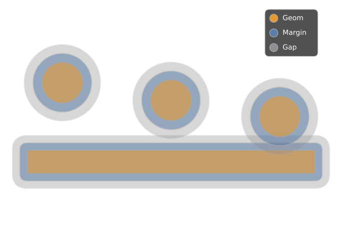
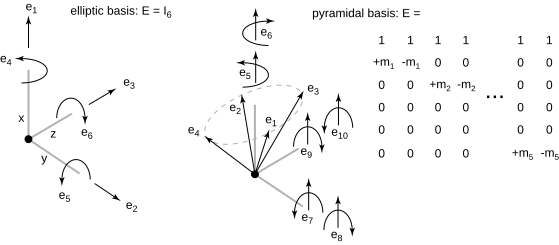
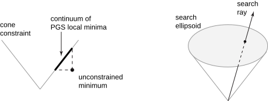
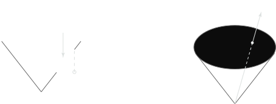
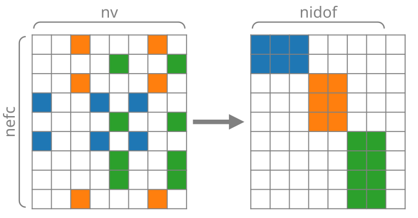
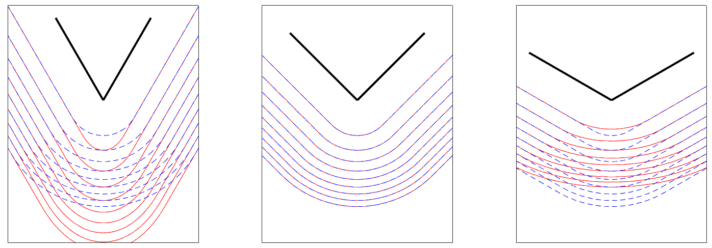
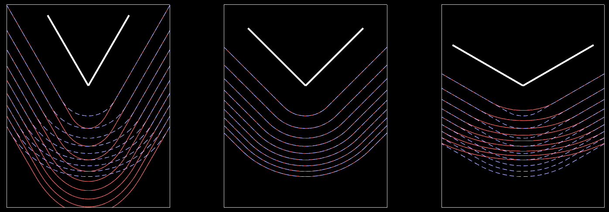
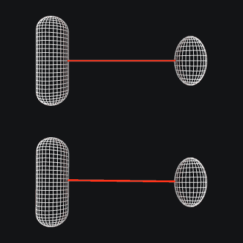

计算#
备注
本页由 AI（Claude Sonnet）根据 MuJoCo 官方英文文档（2026-11-16 版）翻译，仅供学习参考；如有出入，以英文原版为准。术语对照见资料包中的 术语表.md 。
引言#
本章介绍 MuJoCo 的数学与算法基础。对于熟悉广义坐标（或关节坐标）下建模与仿真的读者而言，整体框架相当标准，因此我们只对这部分内容做简要总结。本章的大部分篇幅用于说明我们如何处理接触（contact）及其他约束（constraint）。这一方法基于我们近期的研究，是 MuJoCo 所独有的，所以我们会花时间说明其动机并详细解释。更多信息可参阅下面这篇论文，不过本章中的一些技术思想是新的，其他地方尚未介绍过。
软接触模型#
机器人和人类主要通过物理接触与环境交互。随着物理建模在机器人学、机器学习、动画、虚拟现实、生物力学及其他领域中的重要性日益增加，人们需要既物理精确又计算高效的接触动力学（dynamics）仿真模型。仿真模型的一个应用是在将候选的估计与控制策略部署到物理系统之前对其进行评估。另一个应用是自动化设计这些策略——通常通过在内层循环中使用仿真的数值优化来完成。后一种应用带来了一个额外的约束：基于接触动力学定义的目标函数应当适合进行数值优化。MuJoCo 所采用的接触模型在这些以及其他相关方面都具有优势。在接下来的小节中，我们将讨论它的优势，同时澄清它与线性互补（linear complementarity，LCP）族接触模型之间的差异，后者是事实上的标准。
物理真实性与软接触#
我们接触模型的许多优势可以归因于这样一个事实：我们舍弃了 LCP 公式核心处的严格互补性（complementarity）约束。我们将这一类模型称为凸模型；相关工作参见 参考文献。对于无摩擦接触，舍弃显式互补性约束没有任何影响，因为所得凸二次规划的 Karush-Kuhn-Tucker（KKT）最优性条件与 LCP 等价。但对于有摩擦的接触，则存在差异。
如果把凸模型看作对 LCP 的近似，那么顺理成章的问题就是这种近似有多好。然而我们并不这样看待。相反，我们认为 LCP 模型和凸模型都是对物理现实的不同近似，各有其优缺点。舍弃严格互补性并以一个代价项取而代之，其直接后果是互补性可能被违反——也就是说，接触法向上的力与速度可能同时为正，并且摩擦力可能不是最大耗散的。一个相关的现象是，引发滑动的唯一方式是在法向上产生一些运动。这些效应在数值上很小，但并不理想。不过，这一缺点几乎没有实际意义，因为它是以硬接触的假设为前提的。而所有物理材料都会发生一定的形变。这在机器人学中尤为重要，因为机器人与环境接触的部分通常被设计成软的。对于软接触，互补性必须被违反：当存在穿透（penetration）且材料正在把接触的刚体推开时，法向力和法向速度均为正。此外，如果一个物体停放在软表面上并有一定穿透，而我们向侧面推它，那么我们会预期它在开始滑动时稍微向上移动一点。因此，在存在软接触的情况下，与 LCP 的偏离实际上提高了物理真实性。
当然，并非每一种软模型都是理想的；例如弹簧-阻尼器模型虽然是软的，却深受不稳定性的困扰。同时，不同材料具有不同的特性曲线，因此与硬接触模型不同，软模型必须具有足够丰富的参数化，才能适配多个感兴趣的系统。这反过来也便于对接触模型参数进行系统辨识。
计算效率#
带摩擦接触的 LCP 模型对应于 NP 难的优化问题。这催生了一个近似求解器的产业，其不幸的副作用是，许多流行的物理引擎使用文档不全的捷径，由此得到的运动方程难以刻画。公平地说，NP 难性是关于最坏情况性能的陈述，并不意味着在实践中不可能快速求解 LCP。尽管如此，凸优化（convex optimization）有着公认的优势。在 MuJoCo 中我们观察到，对于典型的机器人模型，投影 Gauss-Seidel 方法（PGS）迭代 10 次所得到的解，在实际应用中与全局最小值无法区分。当然，也有一些问题即使是凸的，在数值上也要难解得多，对于这类问题，我们提供了具有更高阶收敛性的共轭梯度求解器。
不同的使用场景对计算效率的要求不同。如果我们只需要实时仿真，那么现代计算机即使使用低效的求解器，也足以处理大多数感兴趣的机器人系统。然而在优化的语境下，并不存在“足够快”的仿真。如果目标函数及其导数能够算得更快，这就意味着更长的搜索时域、更大的训练集或更大的样本量，进而带来性能的提升。这就是我们在开发高效求解器上投入大量精力的原因。
连续时间#
人们或许会认为，任何物理系统的运动方程在连续时间下都有唯一的定义。然而，有摩擦的接触是有问题的，因为 Coulomb 摩擦模型在连续时间下没有良好的定义（Painleve 悖论）。这使得离散时间近似及相关的速度步进格式变得非常流行。这些模型的连续时间极限很少被研究。对于单个接触，并且在对所施加力的并不一定现实的假设下，该极限满足 Coulomb 摩擦模型的微分包含形式；而对于多个同时发生的接触，则可能存在多个解，具体取决于连续时间极限是如何取的。这些困难可以追溯到硬接触的假设。
过去，摩擦接触的凸模型也依赖于离散时间近似，但这并非必要。本模型是在连续时间下以力和加速度来定义的。鉴于现实世界中的时间是连续的，这样更为自然。这也是控制领域文献中偏好的表述，事实上我们希望 MuJoCo 能够吸引来自该领域的用户。连续时间表述的另一个优点是，它们适合使用复杂的数值积分，而无需承担离散时间变分积分器的计算开销（当惯性依赖于构型时，变分积分器必然是隐式的）。连续时间动力学在时间反向上同样有良好的定义，而这是某些优化算法所需要的。可选启用的 discrete 积分器 是个例外：它直接在离散时间中执行约束求解，以牺牲这些性质为代价，换取刚性元素的无条件稳定性。
discrete integrator is the exception: it performs the
constraint solve directly in discrete time, trading these properties for unconditional stability of stiff elements.逆动力学与优化#
逆动力学（inverse dynamics）的目标是在给定多关节系统的位置、速度和加速度的情况下，恢复所施加的力和接触力。对于硬接触，这一计算是不可能的。设想在不动的情况下推一面墙：除非我们考虑材料的形变——此时就需要软接触模型——否则无法从运动学中恢复接触力。对于弹簧-阻尼器接触模型，逆动力学的计算是平凡的，因为在这种情况下接触力仅是位置和速度的函数，而不依赖于所施加的力。但这也正是弹簧-阻尼器模型不理想的原因：忽略所施加的力意味着在每个时间步都会引入误差，因此仿真器始终处于纠错模式，进而导致不稳定。相比之下，现代接触求解器在计算接触力/冲量时会考虑所施加的力（以及所有内力）。但这使得求逆变得复杂。本接触模型具有唯一确定的逆。事实上，逆动力学比正动力学更容易计算，因为此时优化问题变为对角的，并分解为针对各个接触的独立优化问题——这些问题可以解析求解。
逆动力学在系统辨识、估计和控制中出现的优化算法里起着关键作用。它们使得我们可以把位置序列（或其参数化表示）当作被优化的对象。随后通过对位置求导来计算速度和加速度；利用逆动力学来计算所施加的力和接触力；最后构造一个可以依赖于以上所有量的目标函数。这种方法可互换地称为时空优化、谱方法或直接配点法。MuJoCo 特别适合在存在接触和其他约束的情况下进行此类计算。
通用框架#
我们的记号汇总于下表。与约束相关的额外记号将在后面引入。在有对应项时，我们同时给出主要数据结构 mjModel 和 mjData 中与数学记号对应的字段。
符号 Symbol |
大小 Size |
描述 Description |
MuJoCo 字段 MuJoCo field |
|---|---|---|---|
\(\nq\) |
位置坐标的数量 number of position coordinates |
|
|
\(\nv\) |
自由度（degree of freedom）的数量 number of degrees of freedom |
|
|
\(\nc\) |
活跃约束的数量 number of active constraints |
|
|
\(q\) |
\(\nq\) |
关节位置 joint position |
|
\(v\) |
\(\nv\) |
关节速度 joint velocity |
|
\(\tau\) |
\(\nv\) |
所施加的力：被动力、驱动力、外力 applied force: passive, actuation, external |
|
\(c(q, v)\) |
\(\nv\) |
偏置力（bias force）：科里奥利力、离心力、重力 bias force: Coriolis, centrifugal, gravitational |
|
\(M(q)\) |
\(\nv \times \nv\) |
关节空间中的惯性 inertia in joint space |
|
\(J(q)\) |
\(\nc \times \nv\) |
约束雅可比（Jacobian）矩阵 constraint
Jacobian |
|
\(r(q)\) |
\(\nc\) |
约束残差 constraint residual |
|
\(f(q, v,\tau)\) |
\(\nc\) |
约束力 constraint force |
|
所有模型元素都在编译时被枚举，并被组装成上述系统级的向量和矩阵。在我们之前的机械臂模型示例中，该模型有 \(\nv = 13\) 个自由度：球关节占 3 个，4 个铰链关节各占 1 个，自由漂浮的物体占 6 个。在所有维数为 \(\nv\) 的系统级向量和矩阵中，它们都以相同的顺序出现。与给定模型元素对应的数据可以通过索引操作恢复，如概述一章的 说明 一节所示。维数为 \(\nc\) 的向量和矩阵有所不同，因为活跃的约束在运行时会变化。在这种情况下，仍然存在固定的枚举顺序（对应于模型元素在 mjModel 中出现的顺序），但所有不活跃的约束都被省略。
mjModel) but any inactive constraints are omitted.只要使用四元数（quaternion）来表示三维朝向，位置坐标的数量 \(\nq\) 就会大于自由度的数量 \(\nv\)。当模型包含球关节或自由关节时（即在大多数模型中）就会发生这种情况。此时 \(\dot{q}\) 并不等于 \(v\)，至少在通常意义上不等。相反，我们必须考虑刚体朝向群 \(SO(3)\)——它具有四维空间中单位球面的几何结构。速度位于该球面的三维切空间中。所有内部计算都已考虑到这一点。对于自定义计算，MuJoCo 提供了函数 mj_differentiatePos，它对两个维数为 \(\nq\) 的位置向量做“减法”，并返回一个维数为 \(\nv\) 的速度向量。同时还提供了一些与四元数相关的实用函数。
MuJoCo 在连续时间下同时计算正动力学（forward dynamics）和逆动力学。正动力学随后使用所选的数值积分器在指定的 mjModel.opt.timestep 上进行积分。连续时间下的一般运动方程为
mjModel.opt.timestep with the chosen numerical
integrator. The general equations of motion in continuous time are雅可比矩阵建立了关节坐标与约束坐标中各量之间的关系。它把运动向量（速度和加速度）从关节坐标映射到约束坐标：关节速度 \(v\) 映射为约束坐标中的速度 \(J v\)。雅可比的转置把力向量从约束坐标映射到关节坐标：约束力 \(f\) 映射为关节坐标中的力 \(J^T f\)。
关节空间惯性矩阵 \(M\) 总是可逆的。因此，一旦约束力 \(f\) 已知，我们就可以将正动力学和逆动力学的计算最终确定为
约束力的计算是困难的部分，将在后面描述。但首先，我们通过总结上述各量（直至约束雅可比）是如何计算的，来完成对通用框架的描述。
偏置力 \(c\) 包括科里奥利力、离心力和重力。它们的总和使用递归牛顿-欧拉（Recursive Newton-Euler，RNE）算法计算，其中加速度设为 0。
The bias force \(c\) includes Coriolis, centrifugal and gravitational forces. Their sum is computed using the Recursive Newton-Euler (RNE) algorithm with acceleration set to 0.关节空间惯性矩阵 \(M\) 使用复合刚体（Composite Rigid-Body，CRB）算法计算。该矩阵通常相当稀疏，我们也以稀疏方式表示它，采用为运动学树量身定制的自定义格式。
The joint-space inertia matrix \(M\) is computed using the Composite Rigid-Body (CRB) algorithm. This matrix is usually quite sparse, and we represent it as such, in a custom format tailored to kinematic trees.由于我们经常需要将向量乘以 \(M\) 的逆，因此我们以保持稀疏性的方式计算其 \(L^T D L\) 分解。之后当需要形如 \(M^{-1} x\) 的量时，通过稀疏回代来计算。
Since we often need to multiply vectors by the inverse of \(M\), we compute its \(L^T D L\) factorization in a way that preserves sparsity. When a quantity of the form \(M^{-1} x\) is needed later, it is computed via sparse back-substitution.
在进行任何这些计算之前，我们先应用正运动学，它计算所有空间对象以及关节轴的全局位置和朝向。虽然通常建议在局部坐标中应用 RNE 和 CRB，但这里我们是在为碰撞检测做铺垫，而碰撞检测是在全局坐标中进行的，因此 RNE 和 CRB 也是在全局坐标中实现的。尽管如此，为了提高浮点精度，我们在以子树质心为中心的全局坐标系中表示每个运动学子树的数据（mjData 中以 c 开头的字段）。本章末尾给出了仿真流水线的详细总结。
mjData). A
detailed summary of the simulation pipeline is given at the end of the chapter.执行器模型#
MuJoCo 提供了灵活的执行器（actuator）模型。大多数执行器是单输入单输出（SISO）的：执行器 \(i\) 的输入是由用户指定的标量控制 \(u_i\)，输出是标量力 \(p_i\)，它通过由传动决定的力臂向量映射到关节坐标。执行器还可以拥有具有自身动力学的激活状态 \(w_i\)。所有执行器的控制输入存储在 mjData.ctrl 中，力输出存储在 mjData.actuator_force 中，激活状态（如果有）存储在 mjData.act 中。
mjData.ctrl, the force outputs are stored in mjData.actuator_force, and the activation states (if
any) are stored in mjData.act.更一般地，一个执行器可以有多个控制输入、多个力输出，或两者兼有。例如，同时接受位置设定值和速度设定值的伺服有两个输入和一个输出。输入的数量是执行器类型的属性，输出的数量是其传动的属性；两者都不由用户直接指定。由于输入数量和输出数量可以因执行器而异，模型中有三个独立的计数：执行器数量 nactuator、控制总数 nu 以及力输出总数 nout。在所有执行器都是 SISO 的模型中，这三者相等。请注意，输出是在映射到关节坐标之前、在驱动空间中计数的：只有单个力输出的肌腱执行器可以带动许多关节运动。
nactuator, the total number of controls nu, and the total
number of force outputs nout. In a model where all actuators are SISO, all three are equal. Note that outputs are
counted in actuation space, before the mapping to joint coordinates: a tendon actuator with a single force output can
move many joints.执行器的这三个组成部分——传动、激活动力学和力的生成——决定了执行器如何工作。用户可以独立地设置它们以获得最大的灵活性，也可以使用执行器快捷方式，它们实例化了常见的执行器类型。
传动#
传动（transmission）将执行器连接到系统的其余部分。执行器的每个力输出都有一个标量长度 \(l_k(q)\)，由传动类型及其参数（例如 gear 向量）定义。梯度 \(\nabla l_k\) 是一个 \(\nv\) 维的力臂向量；它决定了从标量输出力到关节力的映射。力输出的数量同样由传动决定；下面列出的所有类型都只定义一个输出。传动的属性由执行器所连接的 MuJoCo 对象决定；可能的连接对象类型有 joint、tendon、jointinparent、slider-crank、site 和 body。
- joint 和 tendonjoint and tendon
joint 和 tendon 传动类型的行为符合预期，对应于执行器向目标对象施加力或力矩。球关节是特殊的，详见 actuator/general/joint 文档。
The joint and tendon transmission types act as expected and correspond to the actuator applying forces or torques to the target object. Ball joints are special, see the actuator/general/joint documentation for more details.- jointinparent
jointinparent 传动是球关节和自由关节所独有的，它规定旋转应当在父坐标系而非子坐标系中度量。
The jointinparent transmission is unique to ball and free joint and asserts that rotation should be measured in the parent rather than child frame.- slider-crank
slider-crank 传动 将线性力转换为力矩，如活塞驱动的内燃机。该模型包含教学示例。曲柄滑块也可以通过创建 MuJoCo 刚体并用等式约束将它们耦合起来进行显式建模，但这样既不够高效也不够稳定。
slider-crank transmissions transform a linear force to a torque, as in a piston-driven combustion engine. This model contains pedagogical examples. Slider-cranks can also be modeled explicitly by creating MuJoCo bodies and coupling them with equality constraints, but that is both less efficient and less stable.- body
body 传动对应于在属于某个刚体的接触点上施加力，用于模拟真空夹爪和生物力学中的粘附附肢。有关粘附的更多信息，请参阅 adhesion 执行器文档。这些传动目标具有固定的零长度 \(l_i(q) = 0\)。
body transmission corresponds to applying forces at contact points belonging to a body, in order to model vacuum grippers and biomechanical adhesive appendages. For more information about adhesion, see the adhesion actuator documentation. These transmission targets have a fixed zero length \(l_i(q) = 0\).- site
Site 传动对应于在 site 的坐标系中施加笛卡尔力/力矩。当未定义 refsite 时（见下文），这些目标具有固定的零长度 \(l_i(q) = 0\)，可用于模拟喷气和螺旋桨：即固定在 site 坐标系上的力和力矩。
Site transmissions correspond to applying a Cartsian force/torque in the frame of a site. When a refsite is not defined (see below), these targets have a fixed zero length \(l_i(q) = 0\) and are useful for modeling jets and propellors: forces and torques which are fixed to the site frame.如果 site 传动是用可选的 refsite 属性定义的，则力和力矩是在参考 site 的坐标系而不是 site 自身的坐标系中施加的。如果定义了参考 site，则执行器的长度不为零，对应于两个 site 的位姿差在参考坐标系中某个选定方向上的投影。随后可以用 position 执行器来控制该长度，从而实现笛卡尔末端执行器控制。更多细节请参阅 refsite 文档。
If a site transmission is defined with the optional refsite attribute, forces and torques are applied in the frame of the reference site rather than the site’s own frame. If a reference site is defined, the length of the actuator is nonzero and corresponds to the pose difference of the two sites, projected onto a chosen direction in the reference frame. This length can then be controlled with a position actuator, allowing for Cartesian end-effector control. See the refsite documentation for more details.
有状态执行器#
一些执行器，例如气动和液压缸以及生物肌肉，具有称为“激活”（activation）的内部状态。这是一个真正的动态状态，超出了关节位置 \(q\) 和速度 \(v\)。在模型中包含这类执行器会导致三阶动力学。我们将执行器激活的向量记为 \(w\)。它们具有一些一阶动力学
由激活类型和相应的模型参数决定。请注意，每个执行器都有独立于其他执行器的标量动力学。目前实现的激活类型为
其中 \(\texttt{t}\) 是存储在 mjModel.actuator_dynprm 中的、特定于执行器的时间常数。此外，类型可以是 "user"，此时 \(w_i\) 由用户定义的回调 mjcb_act_dyn 计算。类型也可以是 "none"，对应于没有激活状态的普通执行器。\(w\) 的维数等于激活类型不为 "none" 的执行器的数量。
mjModel.actuator_dynprm. In addition, the
type can be “user”, in which case \(w_i\) is computed by the user-defined callback mjcb_act_dyn. The type can
also be “none” which corresponds to a regular actuator with no activation state. The dimensionality of \(w\) equals
the number of actuators whose activation type is different from “none”.有关肌肉激活动力学的更多信息，请参阅 肌肉。
对于 filterexact 激活动力学，\(\dot{w}\) 的欧拉积分被替换为解析积分：
filterexact activation dynamics, Euler integration of \(\dot{w}\) is replaced with the analytic integral:这两个表达式在 \(h \rightarrow 0\) 的极限下收敛到相同的值。请注意，对于 \(\texttt{t} < h\)，用欧拉方法积分的滤波器会发散，而精确积分的滤波器对任何正的 \(\texttt{t}\) 都是稳定的。
- actearly:
如果将 actearly 属性设为 "true"，则
mjData.actuator_force基于 \(w_{i+1}\)（下一时刻的激活）计算，这使得 \(u\) 的变化到其对加速度的影响之间的延迟减少一个时间步（因此总的动力学是二阶而非三阶的）。If the actearly attribute is set to “true”,mjData.actuator_forceis computed based on \(w_{i+1}\) (the next activation), reducing the delay between changes to \(u\) and their effects on the acceleration by one time step (so the total dynamics are second-order rather than third order).
力的生成#
每个执行器根据其控制、激活状态以及长度和速度，为其每个输出生成一个标量力。与激活动力学类似，力的生成也是特定于执行器的：单个执行器的输入和输出之间可以相互作用，但不同执行器之间不能相互影响。对于 SISO 执行器，力在存在激活状态时关于激活状态是仿射的，否则关于控制是仿射的：
这里 \(a\) 是特定于执行器的增益（gain）参数，\(b_0, b_1, b_2\) 是特定于执行器的偏置参数，分别存储在 mjModel.actuator_gainprm 和 mjModel.actuator_biasprm 中。增益和偏置参数的不同设置可用来模拟直接力控制以及位置和速度伺服——此时控制/激活具有参考位置或速度的含义。多输入执行器类型定义它们自己的力定律。还可以通过安装回调 mjcb_act_gain 和 mjcb_act_bias 并将增益和偏置类型设为 "user"，来为 SISO 执行器计算自定义的增益和偏置项。请注意，仿射的力生成使得我们可以利用力臂矩阵的伪逆，根据逆动力学中计算出的所施加的力来推断控制/激活。
mjModel.actuator_gainprm and mjModel.actuator_biasprm respectively. Different settings
of the gain and bias parameters can be used to model direct force control as well as position and velocity servos -in
which case the control/activation has the meaning of reference position or velocity. Multi-input actuator types
define their own force laws. One can also compute custom gain and bias terms for SISO actuators by installing the
callbacks mjcb_act_gain and mjcb_act_bias and setting the gain and bias type to “user”. Note that
affine force generation makes it possible to infer the controls/activations from the applied force computed in
inverse dynamics, using the pseudo-inverse of the matrix of moment arms.综合以上所有内容，所有执行器在广义坐标中贡献的净力是对所有力输出求和
该量存储在 mjData.qfrc_actuator 中。它与用户定义的关节坐标或笛卡尔坐标中的力（分别存储在 mjData.qfrc_applied 和 mjData.xfrc_applied 中）一起，被加到所施加的力向量 \(\tau\) 上。
mjData.qfrc_actuator. It is added to the applied force vector \(\tau\), together
with any user-defined forces in joint or Cartesian coordinates (which are stored in mjData.qfrc_applied and
mjData.xfrc_applied respectively).被动力#
被动力定义为仅依赖于位置和速度的力，而不依赖于正动力学中的控制或逆动力学中的加速度。因此，这类力是正动力学和逆动力学计算的共同输入，并且在两种情况下是相同的。它们存储在 mjData.qfrc_passive 中。MuJoCo 计算的被动力在物理意义上也是被动的，即它们不会增加能量；不过用户可以安装回调 mjcb_passive，并向 mjData.qfrc_passive 添加可能增加能量的力。只要这类用户力仅依赖于位置和速度，就不会干扰 MuJoCo 的运行。
mjData.qfrc_passive. The passive forces computed
by MuJoCo are also passive in the sense of physics, i.e., they do not increase energy, however the user can install the
callback mjcb_passive and add forces to mjData.qfrc_passive that may increase energy. This will not interfere
with MuJoCo’s operation as long as such user forces depend only on position and velocity.MuJoCo 可以计算三种类型的被动力：
关节和肌腱中的弹簧-阻尼器。详见以下属性。
关节： stiffness、springref、damping、springdamper。
肌腱： stiffness、springlength、damping。Spring-dampers in joints and tendons. See the following attributes for details.
Joints: stiffness, springref, damping, springdamper.
Tendons: stiffness, springlength, damping.重力补偿力。详见 body 的 gravcomp 属性。
Gravity compensation forces. See the body gravcomp attribute for details.周围介质施加的流体力。详见流体力一章。
Fluid forces exerted by the surrounding medium. See the Fluid forces chapter for details.
多项式力#
非线性刚度（关节、肌腱）和阻尼（关节、肌腱）由阶数为 mjNPOLY + 1 的多项式 \(f\) 定义。实际施加到系统上的力是 \(-f\)，这意味着保号函数会产生恢复力（刚度）或耗散力（阻尼）。
刚度多项式取标准形式（其中 \(x\) 为位移）：
阻尼多项式取反对称化形式（其中 \(v\) 为速度）：
- 反对称化Anti-symmetrization
阻尼多项式使用反对称化的偶次幂单项式（例如 \(v^2 \rightarrow v|v|\)），使函数为奇函数：\(f(-v) = -f(v)\)。这保证了力的方向随速度反向而反向。这种形式在物理上也有依据，因为某些自然形式的阻尼（如流体阻力）呈现反对称的二次曲线特征。
The damping polynomial uses anti-symmetrized even-powered monomials (e.g., \(v^2 \rightarrow v|v|\)) so that the function is odd: \(f(-v) = -f(v)\). This guarantees the force reverses direction with velocity. This formulation is also physically motivated, as some natural forms of damping (like fluid drag) display an anti-symmetric quadratic profile.相比之下，非对称（确切地说是非反对称）的刚度曲线在物理上很常见（例如生物筋膜），因此标准多项式形式及其泰勒级数的便利性更为合适。
In contrast, asymmetric (or rather, non-anti-symmetric) stiffness profiles are physically common (e.g., biological fascia), making the standard polynomial form and its Taylor-series convenience more appropriate.- 保号性Sign-preservation
在这两种情况下，系数的合理选择通常满足保号条件 \(z \cdot f(z) \geq 0\)。该条件等价于要求 \(f\) 的积分（刚度对应势能，阻尼对应耗散）是全局凸的，且最小值位于原点。
In both cases, sensible choices of coefficients often satisfy the sign-preservation condition \(z \cdot f(z) \geq 0\). This condition is equivalent to requiring that the integral of \(f\) (Potential Energy for stiffness and Dissipation for damping) is globally convex with a minimum at the origin.对于刚度，违反该条件会产生排斥力和/或多个平衡点。
For stiffness, violations of the condition create repulsive forces and/or multiple equilibria.对于阻尼，违反该条件会产生非耗散力，向系统注入机械能。
For damping, violations create non-dissipative forces that inject mechanical energy into the system.
编译器不强制保号条件；确保其满足是用户的责任。对于阶数不超过 3 的情形，系数上的解析条件为：
The sign-preservation condition is not enforced by the compiler; it is the user’s responsibility to ensure it is satisfied. The analytical conditions on the coefficients for orders up to 3 are:\[\begin{aligned} \textrm{Standard:} \qquad & a \geq 0, \qquad c \geq 0, \qquad b^2 \leq 4 a c \\ \textrm{Anti-symmetrized:} \qquad & a \geq 0, \qquad c \geq 0, \qquad b < 0 \implies b^2 \leq 4 a c \end{aligned} \]- mjModel 字段mjModel fields
虽然 MJCF 将系数作为单个数组接受（mjs 层也是如此），但在
mjModel中，线性系数与高阶系数是分开存储的。例如，如果 joint/stiffness = "a b c"，则jnt_stiffness[i] = a，jnt_stiffnesspoly[i*mjNPOLY] = b，jnt_stiffnesspoly[i*mjNPOLY + 1] = c。C API 未来的破坏性变更可能会把线性与高阶系数统一到单个数组中。Although MJCF accepts the coefficients as a single array (as does the mjs layer), the linear coefficient inmjModelis stored separately from the higher-order ones. For example, if joint/stiffness = “a b c”, thenjnt_stiffness[i] = a,jnt_stiffnesspoly[i*mjNPOLY] = bandjnt_stiffnesspoly[i*mjNPOLY + 1] = c. A future breaking change of the C-API may unify the linear and higher-order coefficients into a single array.
数值积分#
MuJoCo 在连续时间下计算正动力学和逆动力学。正动力学的最终结果是关节加速度 \(a=\dot{v}\)，以及模型中存在时的执行器激活 \(\dot{w}\)。它们被用来将仿真时间从 \(t\) 推进到 \(t+h\)，并更新状态变量 \(q, v, w\)。
共有四种数值积分器可用：三种单步积分器和多步的四阶 Runge-Kutta 积分器。在介绍这些积分器之前，我们先概括地描述单步欧拉积分器：显式、半隐式和速度隐式。MuJoCo 不支持显式欧拉方法，但它具有教学价值。它可以写成：
请注意，在存在四元数的情况下，运算 \(q_t + h v_t\) 比简单的求和更为复杂，因为 \(q\) 和 \(v\) 的维数不同。之所以不实现显式欧拉，是因为下面这种被称为半隐式欧拉的形式严格更优，并且是物理仿真中的标准做法：
比较 (2) 与 (3)，可以看到在半隐式欧拉中，位置是用新的速度更新的。隐式欧拉则意味着：
比较 (3) 与 (4)，可以看到速度更新右侧的加速度 \(a_{t+h}=\dot{v}_{t+h}\) 是在下一个时间步求值的。虽然不步进就无法计算下一个加速度，但我们可以使用一阶泰勒展开来近似这个量，并执行一步牛顿法。当展开仅针对速度（而不针对位置）时，该积分器被称为速度隐式欧拉。这种方法对于不稳定性由速度相关力引起的系统尤其有效：多关节摆、在空间中翻滚的刚体、存在升力和阻力的系统，以及肌腱和执行器中具有较大阻尼的系统。把加速度写成速度的函数 \(a_t = a(v_t)\)，我们要近似的速度更新为
这是关于未知向量 \(v_{t+h}\) 的非线性方程，可以在每个时间步通过 \(a(v_{t+h})\) 在 \(v_t\) 附近的一阶展开进行数值求解。回顾正动力学为
于是我们定义导数
与牛顿法对应的速度更新如下。首先，将右侧展开到一阶
左乘 \(M\) 并整理后得到
求解 \(v_{t+h}\)，我们得到速度隐式更新
下文所述的 discrete 积分器在两个方面扩展了这一更新。第一，位置进入了展开：记 \(K \equiv -\partial f / \partial q\) 为光滑力的正刚度矩阵，并代入位置更新 \(q_{t+h} = q_t + h v_{t+h}\)，则 \(f(q_{t+h}, v_{t+h})\) 的一阶展开会为有效惯性贡献位置刚度。第二，该展开是与约束联合求解的：约束求解器直接在扩展度量下运行，因此约束力是针对执行更新的同一个有效惯性计算的。如上所述左乘 \(M\) 并整理，得到离散步
discrete integrator described below extends this update in two ways. First, position
enters the expansion: writing \(K \equiv -\partial f / \partial q\) for the positive stiffness matrix of the
smooth forces, and substituting the position update \(q_{t+h} = q_t + h v_{t+h}\), the first-order expansion
of \(f(q_{t+h}, v_{t+h})\) contributes position stiffness to the effective inertia. Second, the expansion is
solved jointly with the constraints: the constraint solver operates directly in the
extended metric, so constraint forces are computed against the same effective inertia that performs the update.
Premultiplying by \(M\) and rearranging as above yields the discrete step其中 \(f_c\) 为约束力，存储在 mjData.qacc 中的 \(a\) 是步映射\((v_{t+h} - v_t)/h\)，而不是连续时间加速度。由于求解器的目标函数必须保持正定，\(D\) 和 \(K\) 被限制在其保证定性的部分：阻尼型的速度导数和正刚度型的位置导数，并按每一项钳位到耗散的符号。科里奥利和向心力的导数，其对称部分是不定的，因此不能进入 \(\widehat{M}\)；在这一点上，discrete 是 implicitfast 的同类，而不是 implicit 的超集。右侧的 \(-h K v_t\) 移位项，是在一阶近似下按步末位置计算的位置刚度力。
mjData.qacc, is the step map
\((v_{t+h} - v_t)/h\) rather than the continuous-time acceleration. Because the solver’s objective must remain
positive definite, \(D\) and \(K\) are restricted to their definiteness-safe parts: damping-type velocity
derivatives and positive stiffness-type position derivatives, clamped per term to the dissipative sign. The Coriolis
and centripetal derivatives, whose symmetric part is indefinite, cannot enter \(\widehat{M}\); in this respect
discrete is a sibling of implicitfast, not a superset of implicit. The \(-h K v_t\) shift on the
right-hand side is the position-stiffness force evaluated at the end-of-step position, to first order.- 自由刚体的陀螺导数Gyroscopic derivatives for free bodies
下文所述的
implicitfast积分器在 \(D\) 中排除了向心力、科里奥利力和陀螺力的导数，从而使 \(\widehat M\) 保持对称，并可以用更快的 Cholesky 分解进行因式分解。然而，显式积分陀螺力可能导致具有非对称惯性的快速旋转自由刚体能量增加并发散。Theimplicitfastintegrator described below excludes the derivatives of centripetal, Coriolis and gyroscopic forces from \(D\), so that \(\widehat M\) remains symmetric and can be factorized with the faster Cholesky decomposition. However integrating gyroscopic forces explicitly can lead to energy gain and divergence of fast-spinning free bodies with asymmetric inertia.因此，对于独立自由刚体（没有以关节相连的后代的自由刚体），这些导数被重新引入。与这样的刚体对应的 \(\widehat M\) 的行构成一个 \(6\times 6\) 的块，它与系统的其余部分解耦。在全局 Cholesky 求解之后，该块用刚体偏置力的精确导数重新组装，并用优化的 \(6\times 6\) LU 例程重新求解。因此，对于独立自由刚体，
implicitfast和implicit计算出相同的更新。Therefore for standalone free bodies (free bodies with no jointed descendants), these derivatives are reinstated. The rows of \(\widehat M\) corresponding to such a body form a \(6\times 6\) block which is decoupled from the rest of the system. After the global Cholesky solve, this block is re-assembled with the exact derivative of the body’s bias force and re-solved with an optimized \(6\times 6\) LU routine. For standalone free bodies,implicitfastandimplicittherefore compute identical updates.性质。 在没有外加力的情况下，旋转自由刚体的动能是不增的。绕主轴的稳定旋转几乎被精确地保持；翻滚运动则受到轻微的阻尼，每步的衰减率约按 \((h|\omega|)^2\) 缩放。需要对翻滚刚体进行长时域能量守恒的系统应使用
RK4积分器。Properties. The kinetic energy of a spinning free body is non-increasing in the absence of applied force. Steady spins about principal axes are conserved almost exactly; tumbling motion is mildly damped, at a rate scaling like \((h|\omega|)^2\) per step. Systems requiring long-horizon energy conservation of tumbling bodies should use theRK4integrator.
积分器#
MuJoCo 支持五种积分器：四种单步积分器和多步的四阶 Runge-Kutta 积分器。前三种单步积分器使用更新式 (6)，只是 \(D\) 矩阵的定义不同，该矩阵始终是解析计算的。discrete 积分器在约束求解内部执行同样的隐式更新，并以位置刚度对其进行扩展 (7)。
discrete integrator performs the same implicit update
inside the constraint solve, extended with position stiffness (7).- 带隐式关节阻尼的半隐式 (
Euler)Semi-implicit with implicit joint damping (Euler) 对于此方法，\(D\) 仅包含关节阻尼的导数。请注意，此时 \(D\) 是对角的，\(\widehat{M}\) 是对称的，因此可以使用 \(L^TL\) 分解（Cholesky 的一种变体）。该分解存储在
mjData.qH中。如果模型没有关节阻尼，或者设置了 eulerdamp 禁用标志，则隐式阻尼被禁用，此时使用半隐式更新 (3) 而不是 (6)，从而避免对 \(\widehat{M}\) 的额外分解（之所以是额外的，是因为为了加速度更新 (5)，\(M\) 已经被分解过了）。For this method, \(D\) only includes derivatives of joint damping. Note that in this case \(D\) is diagonal and \(\widehat{M}\) is symmetric, so \(L^TL\) decomposition (a variant of Cholesky) can be used. This factorization is stored inmjData.qH. If the model has no joint damping or the eulerdamp disable flag is set, implicit damping is disabled and the semi-implicit update (3) is used, rather than (6), avoiding the additional factorization of \(\widehat{M}\) (additional because \(M\) is already factorized for the acceleration update (5)).- 速度隐式 (
implicit)Implicit-in-velocity (implicit) 对于此方法，\(D\) 包含除约束力 \(J^T f(v)\) 之外所有力的导数。目前忽略约束力的导数，因为尽管可以计算它们，但过程复杂，而且数值测试表明将其纳入并没有带来太多好处。尽管如此，约束力的解析导数计划在未来版本中提供。此外，出于计算效率的考虑，我们限制 \(D\) 具有与 \(M\) 相同的稀疏模式。这一限制将排除连接运动学树不同分支上刚体的肌腱中的阻尼。由于 \(D\) 不对称，我们无法使用 Cholesky 分解，但由于 \(D\) 和 \(M\) 具有与运动学树拓扑对应的相同稀疏模式，对 \(\widehat{M}\) 做逆序 \(LU\) 分解可保证没有填充。该分解存储在
mjData.qLU中。For this method, \(D\) includes derivatives of all forces except the constraint forces \(J^T f(v)\). These are currently ignored since even though computing them is possible, it is complicated, and numerical tests show that including them does not confer much benefit. That said, analytical derivatives of constraint forces are planned for a future version. Additionally, we restrict \(D\) to have the same sparsity pattern as \(M\), for computational efficiency. This restriction will exclude damping in tendons which connect bodies that are on different branches of the kinematic tree. Since \(D\) is not symmetric, we cannot use Cholesky factorization, but because \(D\) and \(M\) have the same sparsity pattern corresponding to the topology of the kinematic tree, reverse-order \(LU\) factorization of \(\widehat{M}\) is guaranteed to have no fill-in. This factorization is storedmjData.qLU.- 快速速度隐式 (
implicitfast)Fast implicit-in-velocity (implicitfast) 对于此方法，\(D\) 包含隐式方法中使用的所有力的导数，但不包括由 RNE 算法计算的向心力和科里奥利力 \(c (v)\)。此外，它被对称化为 \(D \leftarrow (D + D^T)/2\)。舍弃 RNE 导数的一个原因是它们的计算代价最高。其次，这些力只有在复杂摆和旋转刚体的高转速下才会快速变化，而这种场景并不常见，并且已被 Runge-Kutta 积分器（见下文）很好地处理。由于 RNE 导数也是 \(D\) 不对称的主要来源，通过舍弃它们并进行对称化，我们可以使用更快的 \(L^TL\) 分解而不是 \(LU\) 分解。对于独立自由刚体，被舍弃的陀螺导数会通过局部的非对称求解重新引入，以可忽略的额外代价防止旋转刚体的能量增加。
For this method, \(D\) includes derivatives of all forces used in the implicit method, with the exception of the centripetal and Coriolis forces \(c (v)\) computed by the RNE algorithm. Additionally, it is symmetrized \(D \leftarrow (D + D^T)/2\). One reason for dropping the RNE derivatives is that they are the most expensive to compute. Second, these forces change rapidly only at high rotational velocities of complex pendula and spinning bodies, scenarios which are not common and already well-handled by the Runge-Kutta integrator (see below). Because the RNE derivatives are also the main source of asymmetry of \(D\), by dropping them and symmetrizing, we can use the faster \(L^TL\) rather than \(LU\) decomposition. For standalone free bodies, the dropped gyroscopic derivatives are reinstated with a local unsymmetric solve, preventing energy gain of spinning bodies at negligible additional cost.- 离散时间 (
discrete)Discrete-time (discrete) 上述积分器保持了 MuJoCo 的连续时间约定：正动力学计算瞬时加速度，而积分是推进状态的单独阶段。该积分器沿袭速度步进格式的传统，放弃了这种分离：约束求解与隐式更新是同一个操作，其解就是步本身，因此积分是平凡的，上述积分器所执行的对 \(\widehat{M}\) 的额外分解（存储在
mjData.qH或mjData.qLU中）也就不再需要。求解器最小化同样的凸 Gauss 原理目标函数，但是是在有效度量 \(\widehat{M} = M + hD + h^2K\) 下，其中 \(D\) 和 \(K\) 表示正的阻尼矩阵和刚度矩阵：即光滑力的负导数，并限制在使 \(\widehat{M}\) 保持正定的项上。因此，约束力是针对执行速度更新的同一个有效惯性计算的。The integrators above preserve MuJoCo’s continuous-time contract: forward dynamics compute the instantaneous acceleration, and integration is a separate stage which advances the state. This integrator gives up that separation, in the tradition of the velocity-stepping schemes: the constraint solve and the implicit update are one operation whose solution is the step itself, so integration is trivial and the additional factorization of \(\widehat{M}\) performed by the integrators above (stored inmjData.qHormjData.qLU) is not needed. The solver minimizes the same convex Gauss-principle objective, but in the effective metric \(\widehat{M} = M + hD + h^2K\), where \(D\) and \(K\) denote positive damping and stiffness matrices: the negated derivatives of the smooth forces, restricted to terms which keep \(\widehat{M}\) positive definite. Constraint forces are therefore computed against the same effective inertia which performs the velocity update.约束行以同样的方式被隐式处理：每一行的 solref 弹簧-阻尼器在步末求值，并被折叠进该行的阻抗和参考值。于是，在任何时间步长下，对于任何 solref，约束行都是稳定的。然而，弹簧刚度高于时间步长所能分辨的接触或限位行（timeconst \(\times\) dampratio \(< h\)）会在碰撞时反弹，因此在该积分器下，refsafe 标志会用已分辨的行替换这样的行：即在给定阻尼比下，该时间步长所对应的最刚的零恢复系数弹簧。timeconst \(\times\) dampratio \(\ge h\) 的行和等式行保持原样；禁用 refsafe 时，每一行都被遵循，timeconst \(\to 0\) 趋近于刚性约束极限（违反量在一步内被消除），而不是产生不稳定。该行的有效阻抗以最大阻抗
mjMAXIMP为上限，这使约束权重保持良好的条件数。代价是约束响应会产生额外的阻尼，并随 \(h/\mathtt{timeconst}\) 增大；当 \(h \to 0\) 时，指定的阻尼比得以恢复。The constraint rows are treated implicitly in the same way: each row’s solref spring–damper is evaluated at the end of the step and folded into the row’s impedance and reference. Constraint rows are then stable for any solref at any timestep. A contact or limit row whose spring is stiffer than the timestep can resolve (timeconst \(\times\) dampratio \(< h\)) would however rebound on impact, so under this integrator the refsafe flag replaces such rows by the resolved row: the stiffest zero-restitution spring for the timestep at the authored damping ratio. Rows with timeconst \(\times\) dampratio \(\ge h\) and equality rows are left as authored; with refsafe disabled, every row is honored and timeconst \(\to 0\) approaches the rigid-constraint limit (the violation is removed in one step) rather than an instability. The row’s effective impedance is capped at the maximum impedancemjMAXIMP, which keeps the constraint weights well-conditioned. The cost is extra damping of the constraint response, growing with \(h/\mathtt{timeconst}\); the specified damping ratio is recovered as \(h \to 0\).\(h^2K\) 项使
discrete成为唯一在位置上隐式的积分器：关节、肌腱和柔性体（flex）的刚度以及执行器位置反馈，在远超显式稳定性极限 \(h \lesssim 2/\omega_{\max}\) 的时间步长下仍然稳定，其中 \(\omega_{\max}\) 是模型中最高的固有频率。The \(h^2K\) term makesdiscretethe only integrator which is implicit in position: joint, tendon and flex stiffness and actuator position feedback are stable at timesteps far beyond the explicit stability limit \(h \lesssim 2/\omega_{\max}\), where \(\omega_{\max}\) is the highest natural frequency in the model.进入 \(D\) 和 \(K\) 的项有：关节阻尼和刚度、肌腱阻尼和刚度、执行器增益（钳位到稳定化的符号）、柔性体弹性和阻尼，以及流体力的耗散性阻力分量。能放入 \(M\) 稀疏模式的项（关节对角项、流体阻力块）会加入其树状结构的分解，没有填充，也不会增加求解的开销；由肌腱、执行器和柔性体项引入的耦合则在迭代求解器内部以无矩阵方式施加。这种划分决定了求解器的支持情况：
CG是无矩阵的，只需要与 \(\widehat{M}\) 的乘积；Newton将度量直接并入其 Hessian；而对偶的PGS和 noslip 求解器则需要显式分解。The terms entering \(D\) and \(K\) are: joint damping and stiffness, tendon damping and stiffness, actuator gains (clamped to the stabilizing sign), flex elasticity and damping, and the dissipative drag component of fluid forces. Terms which fit inside the sparsity pattern of \(M\) (the joint diagonals, the fluid drag blocks) join its tree-structured factorization with no fill-in and add no cost to the solve; the couplings introduced by tendon, actuator and flex terms are applied matrix-free inside the iterative solvers. This split determines solver support:CGis matrix-free and requires only products with \(\widehat{M}\), andNewtonmerges the metric directly into its Hessian, while the dualPGSand noslip solvers require an explicit factorization.因此，在
PGS下，肌腱和执行器项被排除在度量之外，它们的力按显式方式积分，这类似于上文implicit的稀疏模式限制。在原始（primal）求解器下，noslip 后处理会拆分度量：主求解在完整的 \(\widehat{M}\) 中运行，而后处理仅使用分解出的那部分作为近似。刚度过大以至于无法显式积分的柔性体项会引发错误。科里奥利和向心力的导数被排除在外——它们无法进入正定度量——因此以陀螺效应为主的机构更适合使用implicit；独立自由刚体则与implicitfast一样，获得相同的局部陀螺处理。UnderPGS, tendon and actuator terms are therefore excluded from the metric and their forces integrate explicitly, like the sparsity-pattern restriction ofimplicitabove. Noslip post-processing under a primal solver splits the metric: the main solve runs in the full \(\widehat{M}\), while the post-pass consumes the factored part alone as an approximation. Flex terms, which are too stiff to integrate explicitly, raise an error. The Coriolis and centripetal derivatives are excluded — they cannot enter a positive-definite metric — so gyroscopically-dominated mechanisms are better served byimplicit; standalone free bodies receive the same local gyroscopic treatment asimplicitfast.在该积分器下，正动力学计算的是离散步映射：
mjData.qacc保存的是速度差 \((v^+ - v)/h\)，而不是连续时间加速度，因此同一状态在不同的时间步长下会得到不同的qacc；当 \(h \to 0\) 时，它收敛于连续加速度。加速度阶段的传感器（加速度计、力/力矩传感器）报告的是这一有限差分加速度，这正是在一个时间步长内取平均的物理传感器所测得的值。逆动力学对同一关系求逆，因此 fwdinv 一致性检查仍然有意义，并隐含了 invdiscrete。由于qacc是步映射，正动力学的导数就是离散转移的导数，对于基于梯度的方法而言不存在离散化间隙。Under this integrator forward dynamics computes the discrete step map:mjData.qaccholds the velocity difference \((v^+ - v)/h\) rather than the continuous-time acceleration, so the same state yields a differentqaccunder a different timestep; as \(h \to 0\) it converges to the continuous acceleration. Acceleration-stage sensors (accelerometer, force/torque) report this finite-difference acceleration, which is what a physical sensor averaging over one timestep measures. Inverse dynamics inverts the same relation, so the fwdinv consistency check remains meaningful and invdiscrete is implied. Becauseqaccis the step, derivatives of forward dynamics are derivatives of the discrete transition, with no discretization gap for gradient-based methods.限制与当前状态
Limitations and current statusdiscrete积分器是新增的（2026 年 9 月），仍在积极开发中，可能会发生变化。Thediscreteintegrator is new (September 2026), under active development, and subject to change.以下组合不受支持，并会引发运行时错误：
The following combinations are not supported and raise a runtime error:柔性体的边刚度或边阻尼（请改用 elasticity 或边等式约束）。
在
discrete下适用以下近似和回退：The following approximations and fallbacks apply underdiscrete:在
PGS下，肌腱和执行器的度量项被排除，它们的力按显式方式积分。UnderPGS, tendon and actuator metric terms are excluded and their forces integrate explicitly.在原始求解器（
CG、Newton）下，noslip后处理仅根据主干度量因子来近似 Delassus 算子，省略了肌腱和执行器的耦合。Under primal solvers (CG,Newton),noslippost-processing approximates the Delassus operator from the backbone metric factor alone, omitting tendon and actuator couplings.
- 四阶 Runge-Kutta (
RK4)4th-order Runge-Kutta (RK4) 我们的连续时间表述的一个优点是，可以使用更高阶的积分器，如 Runge-Kutta 或多步方法。MuJoCo 实现了固定步长的四阶 Runge-Kutta 方法，不过用户也可以通过调用 mj_forward 并自行对加速度积分，轻松实现其他积分器。我们观察到，对于能量守恒系统（示例），即使时间步长缩小为原来的 1/4（从而计算量相同），RK4 在稳定性和精度上在定性上也优于单步方法。在存在较大的速度相关力时，如果所选的单步方法对这些力做隐式积分，则单步方法可能比 RK4 稳定得多。
One advantage of our continuous-time formulation is that we can use higher order integrators such as Runge-Kutta or multistep methods. MuJoCo implements the fixed-step 4th-order Runge-Kutta method, though users can easily implement other integrators by calling mj_forward and integrating accelerations themselves. We have observed that for energy-conserving systems (example), RK4 is qualitatively better than the single-step methods, both in terms of stability and accuracy, even when the timestep is decreased by a factor of 4 (so the computational effort is identical). In the presence of large velocity-dependent forces, if the chosen single-step method integrates those forces implicitly, single-step methods can be significantly more stable than RK4.
选择时间步长和积分器
- timestep
减小时间步长 \(h\) 可以提高所有积分器的精度和稳定性。当然，更小的时间步长也会减慢仿真。时间步长也许是用户可以调整的最重要的单个参数。如果它太大，仿真就会变得不稳定。如果它太小，就会浪费 CPU 时间而精度并无实质提升。总存在一个时间步长“恰到好处”的舒适范围，但该范围取决于模型。
The accuracy and stability of all integrators can be improved by reducing the time step \(h\). Of course a smaller time step also slows down the simulation. The time step is perhaps the single most important parameter that the user can adjust. If it is too large, the simulation will become unstable. If it is too small, CPU time will be wasted without meaningful improvement in accuracy. There is always a comfortable range where the time step is “just right”, but that range is model-dependent.- integrator
概要：推荐的积分器是
implicitfast，它通常在稳定性与性能之间取得最佳折中。Summary: The recommended integrator isimplicitfastwhich usually has the best tradeoff of stability and performance.- Euler：
为了与旧模型兼容，请使用
Euler。UseEulerfor compatibility with older models.- implicitfast：
implicitfast积分器的计算代价与Euler相近，却提供了更高的稳定性，因此是严格的改进。对于大多数模型，它是推荐的积分器。Theimplicitfastintegrator has similar computational cost toEuler, yet provides increased stability, and is therefore a strict improvement. It is the recommended integrator for most models.- implicit：
相对于
implicitfast的好处是对耦合的旋转系统（如多连杆摆）的科里奥利力和向心力做隐式积分。对于独立自由刚体，这两种积分器是一致的，因为implicitfast会对这样的刚体应用陀螺导数。例如，gyroscopic.xml 展示了一个在斜面上滚动的椭球体；implicitfast和implicit都能很好地处理这种情况，而Euler很快就会发散。The benefit overimplicitfastis the implicit integration of Coriolis and centripetal forces for coupled rotational systems such as multi-link pendula. For standalone free bodies the two integrators coincide, sinceimplicitfastapplies the gyroscopic derivatives to such bodies. For example, gyroscopic.xml shows an ellipsoid rolling on an inclined plane; bothimplicitfastandimplicithandle this case well, whileEulerquickly diverges.- discrete：
当刚性弹簧、位置伺服或强阻尼与接触相互作用时，请选择
discrete：约束求解器和积分器共享同一个有效惯性，且位置刚度是无条件稳定的。在显式稳定性极限以下，它比implicitfast的阻尼略大（弹簧上的后向欧拉耗散）。请注意，mjData.qacc报告的是有限差分速度步 \((v^+ - v)/h\)，而不是连续加速度。Choosediscretewhen stiff springs, position servos or strong damping interact with contacts: the constraint solver and the integrator share one effective inertia, and position stiffness is unconditionally stable. Below the explicit stability limit it is slightly more damped thanimplicitfast(backward-Euler dissipation on the spring). Note thatmjData.qaccreports the finite-difference velocity step \((v^+ - v)/h\) rather than continuous acceleration.- RK4：
该积分器最适合能量守恒或近似能量守恒的系统。pendulum.xml 展示了一个复杂的摆机构，它在使用
Euler或implicitfast时很快发散，而在RK4下能很好地保持能量。请注意，在implicit下，该模型不会发散，而是损失能量。This integrator is best for systems which are energy conserving, or almost energy-conserving. pendulum.xml shows a complicated pendulum mechanism which diverges quickly usingEulerorimplicitfastyet conserves energy well underRK4. Note that underimplicit, this model doesn’t diverge but rather loses energy.
状态#
为了完成对通用框架的描述，我们简要讨论状态的概念。MuJoCo 具有紧凑且定义明确的内部状态，它与确定性流水线一起，意味着诸如（重新）设置状态和计算动力学导数之类的操作也是定义明确的。
状态完全封装在 mjData 结构体中，由若干分量组成。这些分量在 mjtState 中以位标志的形式枚举。拼接后的状态向量可以分别通过 mj_getState 和 mj_setState 方便地从 mjData 中读取和写入。
更多细节见仿真一章的状态与控制一节。
约束模型#
MuJoCo 具有非常灵活的约束模型，但后文介绍的求解器以统一的方式处理这些约束。这里我们解释各个约束在概念上是什么，以及它们如何布局在维数为 \(\nc\) 的系统级向量和矩阵中。每个概念性约束可以为总数 \(\nc\) 贡献一个或多个标量约束，每个标量约束在约束雅可比 \(J\) 中都有对应的一行。活跃约束首先按类型排序，顺序与下文描述各类型的顺序一致，然后在每种类型内按模型元素排序。这些类型是：等式、摩擦损耗、限位、接触。限位在求解器中被作为无摩擦接触处理，在内部不被当作单独的类型。我们在 mjData 中使用前缀 efc 来表示与约束相关数据的系统级向量和矩阵。
efc in mjData to denote system-level vectors and matrices with constraint-related data.等式约束#
MuJoCo 可以对一般形式 \(r(q) = 0\) 的等式约束（equality constraint）建模，其中 \(r\) 可以是位置向量 \(q\) 的任意可微标量函数或向量函数，其语义是残差。求解器实际上也能处理非完整约束，只是我们尚未定义这类约束类型。每个等式约束会为约束总数 \(\nc\) 贡献 \(\dim(r)\) 个元素。\(J\) 中对应的块就是残差的雅可比（Jacobian）矩阵，即 \(\partial r / \partial q\)。请注意，由于四元数（quaternion）的性质，对 \(q\) 求导得到的向量大小为 \(\nv\)，而不是 \(\nq\)。
等式约束的应用之一是创建“闭环关节”（loop joint），即无法通过运动学树（kinematic tree）建模的关节。游戏引擎就是以这种方式表示所有关节的。在 MuJoCo 中也可以这样做，但不推荐——因为这会使仿真既变慢又变得不够精确，实际上等于把 MuJoCo 变成了游戏引擎。用等式约束表示关节的唯一理由是对软关节建模——这可以通过约束求解器（constraint solver）实现，而无法通过运动学树实现。
下面介绍五种等式约束类型。标题中的数字对应各类约束残差的维数。
connect3该约束在一点处连接两个刚体（body），实际上是在运动学树之外创建了一个球关节。模型需要指定被连接的两个刚体，以及每个刚体局部坐标系中的一个点（或称“锚点”）。约束残差定义为这两个点在全局坐标系中的 3D 位置之差。请注意，为同一对刚体指定两个 connect 约束，可以在运动学树之外对铰链关节建模。指定三个或更多 connect 约束（且锚点不共线）在数学上等价于 weld 约束，但计算效率更低。
This constraint connects two bodies at a point, effectively creating a ball joint outside the kinematic tree. The model specifies the two bodies to be connected, and a point (or “anchor”) in the local frame of each body. The constraint residual is then defined as the difference between the global 3D positions of these points. Note that specifying two connect constraints for the same pair of bodies can be used to model a hinge joint outside the kinematic tree. Specifying three or more connect constraints (whose anchors are not co-linear) is mathematically equivalent to a weld constraint but is less efficient computationally.weld6该约束将两个刚体焊接在一起，抑制它们之间所有的相对自由度。约束求解器所强制的相对刚体位置和朝向是
mjModel中的参数。编译器根据模型定义时所处的初始构型，即mjModel.qpos0，来计算这些参数，但用户之后可以修改它们。6D 残差的前三维是与 connect 约束相同的 3D 位置分量，后三维是 3D 朝向分量。后者定义为 \(\sin(\theta/2) (x, y, z)\)，其中 \(\theta\) 是以弧度为单位的旋转角，\((x, y, z)\) 是旋转轴对应的单位向量。对于小角度，它趋近于朝向差的指数映射表示（相差一个因子 2）。对于大角度，它避免了使用 \(\theta\) 而非 \(\sin(\theta/2)\) 时会出现的回绕不连续问题。但它也有一个缺点：当角度接近 180 度时，约束会变弱。另请注意，如果一个刚体是另一个刚体的子刚体，那么实现 weld 约束更快、更精确的方式是直接删除子刚体中定义的所有关节。This constraint welds two bodies together, suppressing all relative degrees of freedom between them. The relative body positions and orientations that are being enforced by the constraint solver are parameters inmjModel. The compiler computes them from the initial configuration in which the model is defined, namelymjModel.qpos0, but the user can change them later. The 6D residual has a 3D position component identical to the connect constraint, followed by a 3D orientation component. The latter is defined as \(\sin(\theta/2) (x, y, z)\) where \(\theta\) is the rotation angle in radians and \((x, y, z)\) is the unit vector corresponding to the rotation axis. For small angles this approaches the exponential map representation of the orientation difference (modulo a factor of 2). For large angles it avoids the wrap-around discontinuity that would result if we used \(\theta\) instead of \(\sin(\theta/2)\). It does have a drawback though: when the angle approaches 180 deg the constraint becomes weak. Note also that if one body is a child of the other body, a faster and more accurate way to implement the weld constraint is to simply remove all joints defined in the child body.joint1该约束仅适用于标量关节：hinge 和 slide。它可用于将某个关节锁定在恒定位置，或通过四次多项式耦合两个关节。锁定关节更好的做法是直接移除该关节，不过在某些特殊情况下它仍然有用，例如（通过软等式约束）对齿隙建模。耦合两个关节可用于对螺旋关节或其他形式的机械耦合建模。四次多项式模型定义如下。设 \(y\) 为第一个关节的位置，\(x\) 为第二个关节的位置，下标 0 表示模型处于初始构型
mjModel.qpos0时对应的关节位置。则等式约束为This constraint applies only to scalar joints: hinge and slide. It can be used to lock one joint into a constant position, or to couple two joints via a quartic polynomial. Locking a joint is better achieved by removing the joint, however it can be useful in special cases such as modeling backlash (via a soft equality constraint). Coupling of two joints is useful for modeling helical joints, or other forms of mechanical coupling. The quartic polynomial model is defined as follows. Suppose \(y\) is the position of the first joint and \(x\) is the position of the second joint, and the subscript 0 denotes the corresponding joint positions when the model is in the initial configurationmjModel.qpos0. Then the equality constraint is\[y-y_0 = a_0 + a_1 \left( x-x_0 \right) + a_2 \left( x-x_0 \right)^2 + a_3 \left( x-x_0 \right)^3 + a_4 \left( x-x_0 \right)^4 \]其中 \(a_0, \ldots, a_4\) 是模型中定义的系数。如果约束只涉及一个关节，则退化为 \(y-y_0 = a_0\)。
where \(a_0, \ldots, a_4\) are coefficients defined in the model. If the constraint involves only one joint, it reduces to \(y-y_0 = a_0\).tendon1该约束与上面的 joint 约束非常相似，但作用于肌腱（tendon）的长度而非关节的位置。肌腱是依赖于位置向量的长度量。这种依赖可以是标量关节位置的线性组合，也可以是绕过空间障碍物的最短长度弦。关节在模型构型
mjModel.qpos0下的位置可以直接从位置向量中读取，而肌腱长度的计算则不那么简单。这就是为什么所有肌腱的“静止长度”由编译器计算并存储在mjModel中。一般而言，mjModel中所有名称以 0 结尾的字段，都是编译器在初始模型构型mjModel.qpos0下计算出的量。This constraint is very similar to the joint constraint above, but applies to the length of tendons instead of the position of joints. Tendons are length quantities that depend on the vector of positions. This dependence can be a linear combination of scalar joint positions, or a minimal-length string wrapping around spatial obstacles. Unlike joints whose positions in model configurationmjModel.qpos0can be read directly from the position vector, the computation of tendon lengths is less trivial. This is why the “resting lengths” of all tendons are computed by the compiler and stored inmjModel. In general, all fields ofmjModelwhose names end with 0 are quantities computed by the compiler in the initial model configurationmjModel.qpos0.distance1注意
Attention距离等式约束已在 MuJoCo 2.2.2 版本中移除。如果您使用的是更早的版本，请切换到对应版本的文档。
Distance equality constraints were removed in MuJoCo version 2.2.2. If you are using an earlier version, please switch to the corresponding version of the documentation.
摩擦损耗#
摩擦损耗（friction loss）也称为干摩擦、静摩擦或与载荷无关的摩擦（与之相对，库仑摩擦随法向力缩放）。与阻尼或粘性类似，它起到阻碍运动的作用。但它在运动开始之前就会先发生作用，因此无法建模为与速度相关的力。它被建模为一种约束，即摩擦所能产生的力的绝对值的上限。该上限通过相应模型元素的 frictionloss 属性指定，可应用于关节和肌腱。
摩擦损耗与所有其他约束类型都不同，因为没有可与之关联的位置残差；所以我们形式上将 \(r(q)\) 的对应分量设为零。事实上，我们稍后会看到，我们的约束求解器公式需要以一种不寻常的方式扩展才能纳入该约束。尽管如此，受影响的关节或肌腱的速度仍起到速度“残差”的作用——因为该约束的效果是减小这一速度，并理想地使其保持为零。因此，约束雅可比中对应的块就是关节位置（或肌腱长度）对 \(q\) 的雅可比。对于标量关节，这是一个在关节地址处为 1、其余为 0 的向量。对于肌腱，这被称为力臂向量。
joint1, 3 or 6摩擦损耗不仅可以为标量关节（slide 和 hinge）定义，也可以为具有 3 个自由度的球关节和具有 6 个自由度的自由关节定义。一旦定义，它会独立地作用于受影响关节的所有自由度。frictionloss 参数的隐含单位与关节相匹配（线性或角度）。自由关节是一个例外，因为它同时具有线性和角度分量，而 MJCF 模型格式只允许每个关节有一个 frictionloss 参数。在这种情况下，线性和角度分量使用同一个参数。有人可能会认为不应允许自由关节存在摩擦损耗。但我们允许这样做，因为它可以对一些有用的非物理效应建模，例如让物体保持原位，直到有东西以足够大的力推动它。
Friction loss can be defined not only for scalar joints (slide and hinge), but also for ball joints which have 3 degrees of freedom, and free joints which have 6 degrees of freedom. When defined, it is applied independently to all degrees of freedom of the affected joint. The frictionloss parameter has implicit units compatible with the joint (linear or angular). Free joints are an exception because they have both linear and angular components, and the MJCF model format allows a single frictionloss parameter per joint. In that case the same parameter is used for both the linear and angular components. It could be argued that friction loss in free joints should not be allowed. However we allow it because it can model useful non-physical effects, such as keeping an object in place until something pushes it with sufficient force.tendon1肌腱是标量，因此为肌腱定义摩擦损耗总是增加一个标量约束。对于空间肌腱，这可用来对肌腱与其缠绕的表面之间的摩擦建模。不过这种摩擦与载荷无关。若要构建该现象更精细的模型，可以创建若干个小的浮动球体，并用肌腱将它们串联起来。这样，球体与周围表面之间的接触将具有与载荷相关的（即库仑）摩擦，但这样仿真的效率会更低。
Tendons are scalar quantities, thus defining friction loss for a tendon always adds one scalar constraint. For spatial tendons this could be used to model friction between the tendon and the surfaces it wraps around. Such friction will be load-independent though. To construct a more detailed model of this phenomenon, create several small floating spheres and connect them with tendons in series. Then the contacts between the spheres and the surrounding surfaces will have load-dependent (i.e., Coulomb) friction, but this is less efficient to simulate.
限位#
限位和接触都有明确定义的空间残差，但与等式约束不同，它们是单边的，也就是说它们引入的是不等式约束而非等式约束。限位可以为关节和肌腱定义。做法是将相应的模型元素标记为“受限”（limited），并定义其“range”参数。残差 \(r(q)\) 是当前位置/长度到 range 中两个限位值里较近者的距离。该距离的符号会被自动调整，使其在尚未到达限位时为正，在限位处为零，在违反限位时为负。当该距离降到“margin”参数以下时，约束变为激活状态。但这与将限位偏移 margin 并把 margin 设为 0 并不相同。实际上，约束力通过后文描述的求解器参数依赖于距离。
给定关节或肌腱的下限和上限有可能同时激活。在这种情况下，二者都会被纳入标量约束列表，但应当避免这种情况——可以通过增大 range 或减小 margin 来做到。特别是，应避免使用很窄的 range 来近似等式约束。应改用显式的等式约束，如果希望有一些松弛，则通过调整求解器参数使约束变软。这在计算上更高效，不仅因为它只涉及一个标量约束而非两个，还因为求解等式约束力通常更快。
joint1 or 2限位可以为标量关节（hinge 和 slide）以及球关节定义。标量关节按上述方式处理。球关节的限位作用于关节四元数的指数映射或轴角表示，即向量 \((\theta x, \theta y, \theta z)\)，其中 \(\theta\) 是旋转角，\((x, y, z)\) 是旋转轴对应的单位向量。限位作用于旋转角 \(\theta\) 的绝对值。在运行时，限位由两个 range 参数中较大的一个决定。但为了语义清晰，应使用第二个 range 参数来指定限位，并将第一个 range 参数设为 0。编译器会强制执行这一规则。
Limits can be defined for scalar joints (hinge and slide) as well as for ball joints. Scalar joints are treated as described above. Ball joint limits are applied to the exponential-map or angle-axis representation of the joint quaternion, i.e., the vector \((\theta x, \theta y, \theta z)\) where \(\theta\) is the rotation angle and \((x, y, z)\) is the unit vector corresponding to the rotation axis. The limit is applied to the absolute value of the rotation angle \(\theta\). At runtime the limit is determined by the larger of the two range parameters. For semantic clarity however, one should use the second range parameter to specify the limit and set the first range parameter to 0. This rule is enforced by the compiler.tendon1 or 2肌腱是标量，其限位按上述方式处理。请注意，固定肌腱（即标量关节位置的线性组合）的“长度”可正可负，因为关节位置是相对于关节参考位置定义的，既可为正也可为负。而空间肌腱具有真实的长度，不可能为负。在设置肌腱限位的 range 和 margin 时请记住这一点。
Tendon are scalar quantities and their limits are treated as described above. Note that fixed tendons (which are linear combinations of scalar joint positions) can have both positive and negative “lengths”, because joint positions are defined relative to the joint reference and can be both positive and negative. Spatial tendons however have true lengths which cannot be negative. Keep this in mind when setting ranges and margins for tendon limits.
接触#
接触是最复杂的约束类型，无论是在模型中指定它们，还是在需要执行的计算方面都是如此。这是因为接触建模本身就具有挑战性，而且我们支持通用的接触模型，允许切向、扭转和滚动摩擦，以及椭圆型和棱锥型摩擦锥。
MuJoCo 使用点接触，其几何定义为两个 geom 之间的一个点，以及以该点为中心的一个空间坐标系，二者都用全局坐标表示。该坐标系的第一个（\(x\)）轴是接触法向方向，其余（\(y\) 和 \(z\)）轴定义切平面。人们可能会期望法向对应 \(z\) 轴，就像 MuJoCo 的可视化约定那样，但我们支持只使用法向轴的无摩擦接触，因此我们希望把法向放在第一位。与限位类似，当两个 geom 分离时接触距离为正，接触时为零，穿透时为负。接触点位于两个表面之间沿法向轴的中点（对于网格碰撞，这可能是近似的）。碰撞检测是一个独立的话题，将在下文详细讨论。我们现在只需要知道，接触点、空间坐标系和法向距离都由碰撞检测器给出。
除了上述在线计算的量之外，每个接触还有若干从模型定义中获得的参数。
参数 Parameter |
说明 Description |
|---|---|
|
接触坐标系中接触力/力矩的维数。 Dimensionality of the contact force/torque in the contact frame. It can be 1, 3, 4 or 6. |
|
维数为 Vector of friction coefficients with dimensionality condim-1. See below for semantics of the specific
coefficients. |
|
geom 表面的几何膨胀量。当距离小于 The geometric inflation of the geom surfaces. Contacts are detected when the distance is below
margin + gap, and contact forces are generated when the distance is below margin. |
|
在 An additional detection buffer beyond margin. Contacts with distance between margin and
margin + gap are included in mjData.contact as inactive contacts, but no contact forces are generated.
This is useful for action-at-a-distance effects, for example by adhesion actuators. |
solref and solimp |
求解器 参数，后文解释。 Solver parameters, explained later. |
margin 和 gap#
每个 geom 都有 margin 和 gap 参数，定义见上表。在考虑两个 geom 之间的接触时，这两个参数的值会被相加。它们共同定义了接触检测和力产生的三种状态，如下图所示。
margin and a gap parameter, defined in the table above. The values for both parameters are
summed when considering contact between the two geoms. Together they define three regimes of contact
detection and force generation, illustrated in the figure below.


两个 geom 表面之间的距离决定了适用哪种状态：
无接触（距离 >
margin + gap）：geom 表面（包括其 gap 缓冲）没有重叠。不产生接触。No contact (distance >margin + gap): The geom surfaces, including their gap buffers, are not overlapping. No contact is generated.非激活接触（
margin< 距离 ≤margin + gap）：检测到接触并将其包含在mjData.contact中，但不产生接触力（efc_address = -1）。这些接触可用于自定义计算，例如 adhesion 执行器。Inactive contact (margin< distance ≤margin + gap): A contact is detected and included inmjData.contact, but no contact force is generated (efc_address = -1). These contacts can be used for custom computations, for example by adhesion actuators.激活接触（距离 ≤
margin）：接触处于激活状态并产生约束力。约束阻抗函数作用于distance - margin这个量，在这一状态下它是非正的。Active contact (distance ≤margin): The contact is active and constraint forces are generated. The constraint impedance function is applied to the quantitydistance - margin, which is non-positive in this regime.
允许使用负的 margin 值，对应于几何形状的“收缩”。在这种情况下，必须保持 margin + gap >= 0，碰撞检测才能正确工作。
margin values, corresponding “shrinkgage” of the geometric shape, are permitted. In this case
margin + gap >= 0 must be maintained for collision detection to work correctly.condim#
接触摩擦锥（friction cone）可以是椭圆型或棱锥型。这是一个全局设置，由约束求解器的选择决定：椭圆型求解器使用椭圆锥，而棱锥型求解器使用棱锥，二者的定义见后文。condim 参数决定接触类型，其含义如下：
condim parameter determines the contact type, and has the following meaning:condim = 1椭圆型为 1，棱锥型为 1condim = 11 for elliptic, 1 for pyramidal这对应于无摩擦接触，只增加一个标量约束。回想一下，接触坐标系的第一个轴是接触法向。无摩擦接触只能沿法向产生力。这与关节或肌腱限位非常相似，只不过作用于两个 geom 之间的距离。
This corresponds to a frictionless contact and adds only one scalar constraint. Recall that the first axis of the contact frame is the contact normal. Frictionless contacts can only generate force along the normal. This is very similar to a joint or tendon limit, but is applied to the distance between two geoms.condim = 3椭圆型为 3，棱锥型为 4condim = 33 for elliptic, 4 for pyramidal这是常规的摩擦接触，除法向力外还可以产生阻碍滑动的切向摩擦力。该数值的一种解释是：平坦物体在重力作用下开始滑动时，其所在表面的斜率。
This is a regular frictional contact, which can generate normal force as well as a tangential friction force opposing slip. An interpretation of this number is the slope of a surface above which a flat object will begin to slip under gravity.condim = 4椭圆型为 4，棱锥型为 6condim = 44 for elliptic, 6 for pyramidal除法向力和切向力之外，这种接触还可以产生阻碍绕接触法向旋转的扭转摩擦力矩，对应于接触表面小块区域产生的力矩。这对于软手指建模很有用，并且可以显著提高仿真抓取的稳定性。扭转摩擦系数具有长度单位，可以解释为表面接触区域的直径。
In addition to normal and tangential force, this contact can generate torsional friction torque opposing rotation around the contact normal, corresponding to a torque generated by a contacting surface patch. This is useful for modeling soft fingers, and can substantially improve the stability of simulated grasping. Torsional friction coefficients have units of length which can be interpreted as the diameter of the surface contact patch.condim = 6椭圆型为 6，棱锥型为 10condim = 66 for elliptic, 10 for pyramidal这种接触可以抵抗两个 geom 之间所有的相对自由度运动。特别是它增加了滚动摩擦，例如可用于阻止球在平面上无限滚动。现实世界中的滚动摩擦源于接触点附近局部变形所耗散的能量。它可用于对轮胎与路面之间的滚动摩擦建模，一般也可用于稳定接触。滚动摩擦系数同样具有长度单位，可以解释为耗散能量的局部变形的深度。
This contact can oppose motion in all relative degrees of freedom between the two geoms. In particular it adds rolling friction, which can be used for example to stop a ball from rolling indefinitely on a plane. Rolling friction in the real world results from energy dissipated by local deformations near the contact point. It can be used to model rolling friction between tires and a road, and in general to stabilize contacts. Rolling friction coefficients also have units of length which can be interpreted as the depth of the local deformation within which energy is dissipated.
请注意，condim 不能是 2 或 5。这是因为两个切向方向和两个滚动方向是成对处理的。不过，同一对中的摩擦系数可以不同，例如可用来对滑冰建模。
摩擦锥#
现在我们更形式化地描述摩擦锥及相应的雅可比。仅在本节中，令 \(f\) 表示单个接触的约束力向量（与系统级的约束力向量相对），\(\mu\) 表示摩擦系数向量，\(n\) 表示接触维数 condim。对于 \(n > 1\)，椭圆型和棱锥型摩擦锥定义为
棱锥定义中的向量不等式按元素理解。对于 \(n=1\)，两种锥都定义为非负射线（这是锥的一种特殊情形）。请注意，下文求解器一节讨论的系统级摩擦锥也将记为 \(\mathcal{K}\)。它是此处定义的各个接触摩擦锥的乘积。
我们还需要说明约束力如何作用于系统。做法是为 \(f\) 的每个分量关联一个 6D 基向量。这些基向量是空间向量：3D 力后接 3D 力矩。将基向量排列成矩阵 \(E\) 的各列，则约束力在接触坐标系中产生的力/力矩为 \(E f\)。基向量矩阵的构造如下。




该图展示了对应 \(n = 6\) 情形的完整基集。其他情形下，根据锥的类型，我们只使用前 \(n\) 列或前 \(2(n-1)\) 列。椭圆锥更容易理解。由于矩阵 \(E\) 是单位矩阵，\(f\) 的前三个分量是沿接触坐标系各轴作用的力，而后三个分量是绕各轴作用的力矩。对于棱锥，基向量对应于棱锥的棱。每个向量结合了一个法向力分量和一个摩擦力或摩擦力矩分量。按摩擦系数缩放可确保所有基向量都位于我们所近似的椭圆摩擦锥之内。这些向量的任意凸组合同样如此。
最后我们说明接触雅可比如何计算。首先构造 \(6\) × \(\nv\) 的矩阵 \(S\)，它将关节速度 \(v\) 映射为以接触坐标系表示的空间速度 \(S v\)。做法是把接触点分别视为属于其中一个 geom，计算其空间雅可比，再将这两个雅可比相减得到 \(S\)。我们采用的约定是接触力从第一个 geom 指向第二个 geom，因此第一个 geom 的空间雅可比带负号。于是接触雅可比为 \(E^T S\)。与所有其他约束一样，该矩阵被插入系统级雅可比 \(J\) 中。
约束求解器#
本节解释约束力是如何计算的。这分为两个阶段。首先，约束力被定义为一个凸优化（convex optimization）问题的唯一全局解。对于棱锥型摩擦锥，它是一个二次规划；对于椭圆型摩擦锥，它是一个锥规划。其次，用下文描述的算法求解该优化问题。我们还会描述约束模型的参数，以及它们如何影响最终的动力学。
优化问题本身的定义分为两步。我们从一个定义在加速度 \(\dot{v}\) 上的原问题（primal problem）开始，其中约束力是隐式的。然后我们将加速度上的原问题变换为其拉格朗日对偶问题。对偶问题是定义在约束力上的凸优化问题，约束力同时也是原问题的拉格朗日乘子。在正动力学中，原问题或对偶问题必须通过数值方法求解。在逆动力学中，问题变为对角形式，可以解析求解。
原问题的表述基于高斯最小约束原理的推广。在其基本形式中，高斯原理指出：如果我们有无约束动力学 \(M \dot{v} = \tau\)，并施加加速度约束 \(J \dot{v} = \ar\)，则得到的加速度为
其中加权 \(L_2\) 范数是通常的 \(\|x\|^2_M = x^T M x\)。因此，约束造成的偏离无约束加速度 \(M^{-1}\tau\) 的量是尽可能小的，其中度量关节坐标中偏离量的度量由惯性矩阵给出。已知该原理等价于约束运动的拉格朗日-达朗贝尔原理。在这里我们将用它来获得一个丰富而又有原则性的软约束模型。做法是同时推广高斯原理中的代价函数和约束。
除了前面引入的记号之外，我们还将使用以下记号：
符号 Symbol |
大小 Size |
说明 Description |
|---|---|---|
\(z\) |
\(\nc\) |
约束形变 constraint deformations |
\(\omega\) |
\(\nc\) |
约束形变的速度 velocity of constraint deformations |
\(k\) |
\(\nc\) |
虚拟约束刚度 virtual constraint stiffness |
\(b\) |
\(\nc\) |
虚拟约束阻尼 virtual constraint damping |
\(d\) |
\(\nc\) |
约束阻抗 constraint impedance |
\(A(q)\) |
\(\nc \times \nc\) |
约束空间中的逆惯性 inverse inertia in constraint space |
\(R(q)\) |
\(\nc \times \nc\) |
约束空间中的对角正则化项 diagonal regularizer in constraint space |
\(\ar\) |
\(\nc\) |
约束空间中的参考加速度 reference acceleration in constraint space |
\(\au(q, v, \tau)\) |
\(\nc\) |
约束空间中的无约束加速度 unconstrained acceleration in constraint space |
\(\ac(q, v, \dot{v})\) |
\(\nc\) |
约束空间中的受约束加速度 constrained acceleration in constraint space |
\(\mathcal{K}(q)\) |
所有接触摩擦锥的乘积 product of all contact friction cones |
|
\(\eta\) |
摩擦损耗力的上界 upper bounds on friction loss forces |
|
\(\Omega(q)\) |
可容许约束力的凸集 convex set of admissible constraint forces |
|
\(\mathcal{E}, \mathcal{F}, \mathcal{C}\) |
等式约束、摩擦损耗约束、接触约束的索引集 index sets for Equality, Friction loss, Contact constraints |
索引集将用于指代向量和矩阵的各个部分。例如，\(J_\mathcal{C}\) 是雅可比中所有对应于接触约束的行构成的子矩阵。
原问题#
我们首先给出其解能得到受约束加速度 \(\dot{v}\) 的优化问题，然后解释它的含义以及为什么它是合理的。该问题为
这里的新角色是使约束变软的对角正则化（regularization）项 \(R > 0\)，以及使约束保持稳定的参考加速度 \(\ar\)；后者是一个弹簧阻尼器，定义在下面的参数一节。它在精神上类似于 Baumgarte 稳定化，但它不是直接添加约束力，而是修改优化问题，该问题的解就是约束力。由于该问题本身带有约束，\(\ar\) 与 \(f\) 之间的关系通常是非线性的。\(R\) 和 \(\ar\) 由求解器参数计算得到，后文会介绍。目前我们假设它们是给定的。
优化变量 \(x\) 代表加速度，与高斯原理中一致，而 \(y\) 是约束空间中的松弛变量。它是对软约束建模所必需的。如果我们强制解达到 \(y = \ar\)（可以通过取极限 \(R \to 0\) 做到），就会得到硬约束模型。MuJoCo 不允许这一极限，但尽管如此，仍然可以构造出在现象上表现为硬约束的模型。
符号 \(\mathcal{K}^*\) 表示摩擦锥的对偶锥。引入它源于数学上的逆向工程：我们希望在对原问题取对偶之后恢复约束 \(f \in \mathcal{K}\)，而锥的对偶的对偶就是锥本身。前面定义的棱锥型摩擦锥实际上是自对偶的，但椭圆型摩擦锥不是。
Huber“范数”基于稳健统计中的 Huber 函数：它在零附近是二次函数，当自变量的绝对值越过某个阈值时平滑过渡为线性函数——此处的阈值由摩擦损耗参数给出。令 \(\eta = \infty\) 即可还原二次范数；对于所有不由摩擦损耗产生的约束力，我们都采用这一约定。这是逆向工程的又一个例子：我们希望得到摩擦损耗力的区间约束，这并不平凡，因为拉格朗日对偶通常得到的是非负性约束。事实证明，Huber 函数恰好是在对偶问题中获得区间约束所需要的。在没有摩擦损耗约束的情况下，两种范数都变为二次范数。
现在我们将问题 (8) 与高斯原理更紧密地联系起来，并赋予松弛变量物理意义。考虑一个位置为 \((q, z)\)、速度为 \((v, \omega)\) 的增广动力系统。新的状态变量对应于形变动力学。与原系统中 \(v\) 不同于 \(\dot{q}\) 类似，这里 \(\omega\) 也不同于 \(\dot{z}\)，不过原因不同。形变与非零的位置残差有关。回想一下，等式约束、限位、棱锥型摩擦锥的所有分量以及椭圆型摩擦锥的法向分量都具有明确定义的位置残差。对于这些形变变量，我们有 \(\dot{z} = \omega\)。但对于摩擦损耗以及椭圆锥的摩擦分量，我们有 \(z = 0\) 而 \(\omega \neq 0\)。这是因为，即使约束空间中可能存在运动（约束力的目的就是阻止它），也不存在位置误差。增广动力学为
将高斯原理应用于该系统，除 Huber 范数之外，就得到上述原优化问题。一般运动方程 (1) 现在变为
展开所有波浪号，得到原始动力学和形变动力学的显式形式：
因此，\(R\) 的含义是形变惯性的逆，而 \(\ar\) 的含义是无外力作用时的形变加速度。
MuJoCo 是否把这些形变变量作为系统状态的一部分，并将其动力学与关节位置和速度一起积分？不会，尽管这样的选项将来也许值得提供。回想一下，我们把正则化项和参考加速度的函数依赖关系定义为 \(R(q)\) 和 \(\ar(q, v)\)。这使得问题 (8) 只依赖于 \((q, v, \tau)\)，因此原始动力学实际上不受形变动力学的影响。由于我们目前建立的一般约束模型对 \(R\) 和 \(\ar\) 的计算方式不作任何假设，我们的选择是自洽的，并且提高了仿真器的效率。尽管如此，既然这些量与形变动力学有关，把它们定义为 \(R(z)\) 和 \(\ar (z, \omega)\) 并对整个增广系统进行仿真，可能会更自然。下面我们阐明这种仿真的一些好处。
形变动力学何时会精确地“跟踪”原始动力学？可以验证，当约束力 \(f\) 等于下文参数一节中定义的量 \(f^+\) 时就会出现这种情况。此时形变状态成为关节位置和速度的静态函数，即 \(z = r(q)\) 和 \(\omega = J(q) v\)。但一般情况并非如此。设想你把手指按进一种柔软的材料，以比材料恢复形状更快的速度把手指抽回，然后再按下去。你在第二次按压时感受到的接触力，不仅取决于手指和物体的刚体位置，还取决于第一次按压时产生的材料形变。对上述增广动力学进行仿真可以捕捉到这一现象，而 MuJoCo 中实现的模型忽略了它，转而假设所有物体在下一次接触之前都恢复了形状。摩擦维度上的滑移也有一个与之相关的现象，同样被忽略了。
简化原问题#
(8) 中定义的原问题，以及我们稍后将得到的对偶问题，都是约束优化问题。对偶问题的形式更简单，但无论如何，约束优化在数值上仍不如无约束优化高效。事实证明，原问题可以简化为关于加速度的无约束优化。如果 (8) 中的 \(x\) 已给定，则对 \(y\) 的最小化可以得到闭式解。这同时也消除了约束，因为 \(y\) 的解自动满足约束。这样我们就得到一个关于 \(x\) 的无约束优化问题，可以用更高效的算法求解。
这一简化基于以下事实：(8) 中对 \(y\) 的最小化归结为在约束集上寻找最近点——约束集要么是平面，要么是锥，可以解析地求解。代入结果，我们得到无约束问题
函数 \(s(\cdot)\) 起到软约束惩罚项的作用。可以证明它是凸的且一阶连续可微。对于棱锥型摩擦锥，它是二次样条。
简化形式的另一个吸引人的特点是，逆动力学可以很容易地计算。由于上述问题无约束且为凸，唯一的全局最小值处梯度为零。这给出恒等式
这就是存在软约束时的解析逆动力学。与运动方程 (1) 比较，可见约束力 \(f\) 由函数 \(s(\cdot)\) 的负梯度给出。再对 \(\dot{v}\) 求一次导，得到
这就是外力对加速度的解析导数。由此可见，函数 \(s(\cdot)\) 及其导数是 MuJoCo 物理模型的关键。
对偶问题#
构造拉格朗日对偶的过程有些繁琐，但已经非常成熟。我们直接给出结果。上面定义的原问题的拉格朗日对偶为
其中约束空间中的逆惯性为
约束空间中的无约束加速度为
约束集 \(\Omega\) 如下。\(\lambda_\mathcal{E}\) 是无约束的，因为它是原问题中等式约束的拉格朗日乘子。对于摩擦损耗，我们有逐元素作用的盒式约束 \(\left|\lambda_\mathcal{F}\right| \leq \eta\)。对于接触，我们有 \(\lambda_\mathcal{C} \in \mathcal{K}\)。对于棱锥型摩擦锥，这就是简单的 \(\lambda_\mathcal{C} \geq 0\)，而对于椭圆型摩擦锥，它是二阶锥约束。\(A\) 只是对称半正定的，而 \(R\) 按构造是对称正定的，因此上述二次代价是严格凸的。于是，对于棱锥型摩擦锥，我们得到一个带盒式约束的凸二次规划；对于椭圆型摩擦锥，我们得到盒式约束与二阶锥约束的混合。求解该问题的算法将在后文描述。
如前所述，MuJoCo 的约束模型具有唯一确定的逆动力学，我们在上面的简化形式中已经看到了推导它的一种方法。这里我们从对偶形式再推导一次。回想一下，在逆动力学中我们可以获得的是 \((q, v, \dot{v})\) 而不是 \((q, v, \tau)\)，因此无约束加速度 \(\au\) 是未知的。但我们可以计算受约束加速度
现在可以通过求解如下优化问题来计算逆动力学
通过比较这两个凸优化问题的 KKT 条件，可以验证当满足
时，它们的解一致。这一关键恒等式本质上是投影到约束空间中的牛顿第二定律。推导方法是：将运动方程 (1) 中的 \(c\) 项移到右边，左乘 \(J M^{-1}\)，两边加上 \(\dot{J} v\)，并代入上面对 \(A, \au, \ac\) 的定义。计算 \(\dot{J} v\) 需要对约束雅可比关于时间求导，这并不简单。尽管该项在恒等式 (11) 中相互抵消，因而不影响正逆动力学的比较，但在正动力学中省略它，会为任何雅可比随构型变化的约束引入与速度相关的偏差。我们对等式约束（connect 和 weld）计算了该项，因为这类约束的雅可比求导是可处理的。对于接触，由于要通过碰撞流水线对接触坐标系求导过于复杂，该项仍被省略。
请注意，逆问题中的二次项由 \(R\) 而不是 \(A+R\) 加权。这是关键的结构性洞察：\(A\) 矩阵完全抵消，二次项中只剩下 \(R\)。由此得到两个结论。第一，在对应硬约束的极限 \(R \to 0\) 下，逆不再有定义，这与预期一致。第二，逆问题是对角的，也就是说，它解耦为关于各个约束力的独立优化问题。由于 \(R\) 是对角的，不需要矩阵求逆或分解——逆动力学完全不需要优化，只需要解析公式。仅存的耦合来自约束集 \(\Omega\)，但该集合在前面讨论过的概念性约束上也是解耦的。事实证明，所有这些独立的优化问题都可以解析求解。唯一不平凡的情形是椭圆型摩擦锥模型；我们在上文引用的论文中展示了如何处理它。它要求 \(R\) 的对角值满足某种耦合，MuJoCo 会自动强制满足这一条件，从而使每个模型都能得到精确的解析逆。
一旦计算出正动力学，逆动力学在计算上基本上是免费的。这是因为正动力学需要进入逆问题的所有量，所以唯一额外的一步就是解析公式。这使得在 MuJoCo 中实现自动正确性检查成为可能。当 mjModel.opt.enableflags 中的标志 fwdinv 打开时，每个时间步长（time step）结束时会自动比较正动力学和逆动力学，差异记录在 mjData.solver_fwdinv 中。出现差异说明正向求解器——它是数值的，且通常会提前终止——收敛得不好。当然，逆动力学本身也很有用，无需先计算正动力学。
fwdinv in mjModel.opt.enableflags is on, the forward and inverse dynamics are automatically compared at the end
of each time step, and the difference is recorded in mjData.solver_fwdinv. Discrepancies indicate that the forward
solver—which is numerical and is usually terminated early—is not converging well. Of course the inverse dynamics are
also useful on their own, without computing the forward dynamics first.算法#
这里我们描述求解上述凸优化问题的数值算法（或称“求解器”）。Newton 和 CG 求解器使用简化原问题形式 (9)，而 PGS 求解器使用对偶形式 (10)。请注意，数值求解器只在正动力学中需要。逆动力学通过解析方式处理。
每种求解算法都可以与棱锥型和椭圆型摩擦锥一起使用，也可以与约束雅可比及相关矩阵的稠密和稀疏表示一起使用。
- CG共轭梯度法CGconjugate gradient method
该算法使用带 Hager-Zhang 公式的非线性共轭梯度法。线搜索是精确的，在一维上使用牛顿法，并对分段二次代价使用解析二阶导数。CG 没有准备开销。
This algorithm uses the non-linear conjugate gradient method with the Hager-Zhang formula. Line-search is exact, using Newton’s method in one dimension with analytical second derivatives on the piecewise-quadratic cost. CG has no setup cost.- Newton牛顿法NewtonNewton’s method
该算法实现精确的牛顿法，使用解析二阶导数和 Hessian 的 Cholesky 分解。在稀疏模式下，Hessian \(H = \widehat{M} + J^T D J\) 通过按逆序消去各行（从 \(\nv - 1\) 到 \(0\)，从叶到根）分解为 \(L^T L\)；这使得运动学树 \(\widehat{M}\) 上的填充为零，不过树外约束可能会引入填充，具体取决于刚体排序。线搜索与 CG 方法相同。当约束状态在迭代之间发生变化时（例如某个约束从二次变为线性），Hessian 分解通过秩 1 的 Cholesky 更新来增量更新，从而避免完全重新分解。当以下三个量中的任何一个低于容差时会触发提前终止：上一次迭代的代价改进量、梯度范数，以及牛顿减量 \(\tfrac{1}{2} g^T H^{-1} g\)——即下一次迭代的预测代价改进量。它是默认求解器。
This algorithm implements the exact Newton method, with analytical second-order derivatives and Cholesky factorization of the Hessian. In sparse mode, the Hessian \(H = \widehat{M} + J^T D J\) is factorized as \(L^T L\) by eliminating rows in reverse order (\(\nv - 1\) down to \(0\), leaves to root); this gives zero fill-in on the kinematic tree \(\widehat{M}\), though off-tree constraints can introduce fill-in depending on body ordering. The line-search is the same as in the CG method. When constraint states change between iterations (e.g., a constraint transitions from quadratic to linear), the Hessian factorization is updated incrementally via rank-1 Cholesky updates, avoiding full refactorization. Early termination is triggered when any of three quantities falls below tolerance: the cost improvement of the last iteration, the gradient norm, and the Newton decrement \(\tfrac{1}{2} g^T H^{-1} g\) – the predicted cost improvement of the next iteration. It is the default solver.- PGS投影高斯-赛德尔法PGSProjected Gauss-Seidel method
这是物理仿真器中最常用的算法，过去曾是 MuJoCo 的默认算法，直到我们开发出在各方面看起来都更好的 Newton 方法。PGS 使用对偶形式。与沿斜向方向改进解的基于梯度的方法不同，高斯-赛德尔法一次处理一个标量分量，并在给定所有其他分量当前值的情况下，将其设为最优值。PGS 的一次扫描具有一次矩阵向量乘法的计算复杂度（尽管常数更大）。它具有一阶收敛性，但仍能在几次迭代内快速取得进展。
This is the most common algorithm used in physics simulators, and used to be the default in MuJoCo, until we developed the Newton method which appears to be better in every way. PGS uses the dual formulation. Unlike gradient-based methods which improve the solution along oblique directions, Gauss-Seidel works on one scalar component at a time, and sets it to its optimal value given the current values of all other components. One sweep of PGS has the computational complexity of one matrix-vector multiplication (although the constants are larger). It has first-order convergence but nevertheless makes rapid progress in a few iterations.

使用棱锥型摩擦锥时，问题涉及盒式约束，PGS 传统上就应用于这类问题。如果我们将 PGS 直接应用于椭圆型摩擦锥产生的锥约束，它会陷入连续的局部极小值中；见左图。这是因为它只能沿坐标轴方向取得进展。右图展示了我们对这一问题的解决方案。我们仍然一次更新一个接触，但在接触内部，我们沿适应约束曲面的非正交轴更新，具体如下。首先，我们沿从锥尖穿过当前解的射线优化二次代价。然后，我们用一个经过当前解且与接触法向正交的超平面切割该锥。这会得到一个椭球，按照我们的接触模型，其维数最高可达 5 维。现在我们在这个椭球内优化二次代价。这是二次约束二次规划（QCQP）的一个实例。由于只有一个标量约束（不论它多么非线性），对偶问题就是关于未知拉格朗日乘子的标量优化问题。我们用牛顿法求解该问题直至收敛——实践中不到 10 次迭代，且涉及的矩阵很小。总体而言，该算法对于棱锥型摩擦锥的行为与 PGS 相似，但它可以在不近似的情况下处理椭圆锥。它在每个接触上做的工作更多，但接触的维数更小，这两个因素大致相互抵消。
When using pyramidal friction cones, the problem involves box constraints to which PGS has traditionally been applied. If we applied PGS directly to the conic constraints resulting from elliptic friction cones, it would get stuck in a continuum of local minima; see left panel. This is because it can only make progress along the coordinate axes. The right panel illustrates our solution to this problem. We still update one contact at a time, but within a contact we update along non-orthogonal axes adapted to the constraint surface, as follows. First, we optimize the quadratic cost along the ray from the tip of the cone through the current solution. Then we slice the cone with a hyperplane passing through the current solution and orthogonal to the contact normal. This yields an ellipsoid which can be up to 5-dimensional, given our contact model. Now we optimize the quadratic cost within this ellipsoid. This is an instance of quadratically constrained quadratic programming (QCQP). Since there is only one scalar constraint (however nonlinear it may be), the dual is a scalar optimization problem over the unknown Lagrange multiplier. We solve this problem with Newton’s method applied until convergence – which in practice takes less than 10 iterations, and involves small matrices. Overall this algorithm has similar behavior to PGS for pyramidal cones, but it can handle elliptic cones without approximating them. It does more work per contact, however the contact dimensionality is smaller, and these two factors roughly balance each other.


- NoSlip后处理过程NoSlippost-processing pass
这不是一个独立的求解器，而是一个后处理步骤，通过在 option 中将
noslip_iterations设为正值来启用。在主求解器（Newton、CG 或 PGS）收敛之后，NoSlip 求解器仅对摩擦维度重新求解，在这些维度上使用 \(R = 0\)（即硬约束）的 PGS 扫描。这抑制了软约束模型固有的接触滑移。然而，这种级联的优化步骤不再求解单一的、定义明确的优化问题；它是一种临时性的修正，在具有复杂多接触相互作用的模型中偶尔会引起不稳定。This is not a standalone solver but a post-processing step, enabled by settingnoslip_iterationsto a positive value in option. After the main solver (Newton, CG, or PGS) has converged, the NoSlip solver re-solves the friction dimensions only, using a PGS sweep with \(R = 0\) (i.e., hard constraints) in those dimensions. This suppresses the contact slip that is inherent to soft-constraint models. However, this cascade of optimization steps no longer solves a single well-defined optimization problem; it is an ad-hoc correction that can occasionally cause instabilities in models with complex multi-contact interactions.- 热启动Warmstart
在求解之前，求解器会用上一个时间步长的约束力进行热启动（warm start）。它会评估热启动力的代价，并与零力（即无约束解
qacc_smooth）的代价进行比较，使用代价较低的初始化。这种双重热启动策略很稳健：当约束在多个时间步长之间持续存在时，它能快速引导求解器，同时避免从已经消失的约束中沿用过时的力。Before solving, the solver warmstarts the constraint forces from the previous time step. It evaluates the cost of the warmstarted forces and compares it against the cost of zero forces (i.e., the unconstrained solutionqacc_smooth). The lower-cost initialization is used. This dual warmstart strategy is robust: it quickly bootstraps the solver when constraints persist across time steps, but avoids carrying over stale forces from constraints that have disappeared.由于分段二次代价的每个区域的曲率至少为 \(M\)，代价在 \(M\) 范数下是强凸的，这使得任意点的次优性受其约束力处的对偶间隙所界定：\(\text{cost}(a) - \text{cost}^* \le \tfrac{1}{2} g^T M^{-1} g\)。在开始迭代之前，CG 和 Newton 求解器利用已计算出的 \(M\) 的分解，在热启动点处评估这一证书。如果它低于容差，则收敛得到证明，求解器立即返回，迭代次数为零；在 Newton 的情形下，这会跳过构造和分解 Hessian 的步骤。在静止且热启动良好的场景中，这几乎消除了约束求解器的全部开销。
Because every zone of the piecewise-quadratic cost has curvature of at least \(M\), the cost is strongly convex in the \(M\)-norm, which bounds the suboptimality of any point by the duality gap at its constraint forces: \(\text{cost}(a) - \text{cost}^* \le \tfrac{1}{2} g^T M^{-1} g\). Before starting iterations, the CG and Newton solvers evaluate this certificate at the warmstarted point, using the already-computed factorization of \(M\). If it is below tolerance, convergence is proven and the solver returns immediately with zero iterations; in the Newton case this skips constructing and factorizing the Hessian. In a quiescent, well-warmstarted scene this eliminates nearly the entire cost of the constraint solver.
约束岛#


考虑由自由度（DOFs）和约束定义的抽象图。一个顶点是单个运动学树中的所有自由度；一条边是属于不同树的两个刚体之间的约束（接触、等式约束或肌腱限位）。约束岛（constraint island）是一个不相交的子图，可以独立求解，因为约束力无法在岛之间传播。约束岛的发现与构造（“islanding”）包括找到这些不相交的子图，并对自由度和约束重新排序，使其在内存中连续。这相当于对约束雅可比 \(J\) 做分块对角化，如图所示。左侧是大小为 \(\nc \times \nv\) 的整体雅可比，其中我们使用 MuJoCo 数据结构中对应的尺寸名称 mjData.nefc 和 mjModel.nv。右侧是具有 3 个可独立求解的岛的分块对角化雅可比。请注意，islanding 还会识别无约束的自由度，因此 mjData.nidof（所有岛中的自由度总数）可能小于 mjModel.nv。虽然 islanding 并非没有代价（参见 engine_island.c 中的实现），但它是值得的：
mjData.nefc and mjModel.nv. On the right is the
block-diagonalized Jacobian with 3 islands that can be solved independently. Note that islanding also identifies
unconstrained DOFs, so mjData.nidof, the total number of DOFs in all islands, might be smaller than mjModel.nv.
While islanding is not free (see implementation in engine_island.c), it is worth the effort:不同的岛收敛所需的迭代次数不同，整体求解会一直运行到最慢的岛所需的迭代次数。
Different islands require different numbers of iterations to converge, and a monolithic solve would run for the number required by the slowest island.无约束的自由度完全不受求解器影响，否则求解器需要自己发现它们不受影响。
Unconstrained DOFs are completely untouched by the solver, which otherwise needs to discover that they are unaffected.求解各个独立的岛可以多线程并行。
Solving separate islands can be multi-threaded.
参数#
本节说明量 \(R, \ar\) 是如何由模型参数计算得到的。要让所选的参数化方式有意义，我们首先需要理解这些量如何影响动力学。我们关注 (10) 的无约束极小点，即
如果恰好有 \(f^+ \in \Omega\)，那么 \(f^+ = f\) 就是我们的模型实际产生的约束力。我们关注这种情形，是因为它很常见：在任意给定时刻，\(\Omega\) 中处于激活状态的约束子集通常很小；而且这也是我们唯一能够实际分析的情形。将 \(f^+\) 代入约束动力学 (11) 并整理各项，得到
因此，受约束加速度是在无约束加速度与参考加速度之间的插值。特别地，在 \(R \to 0\) 的极限下，我们得到硬约束，且 \(\ac = \ar\)；而在 \(R \to \infty\) 的极限下，我们得到无限软的约束（即没有约束），且 \(\ac = \au\)。于是很自然地可以引入一个直接控制该插值的模型参数。我们称这个参数为 阻抗 （impedance），记为 \(d\)。它是维数为 \(\nc\) 的向量，逐元素满足 \(0<d<1\)。一旦指定了它，我们就按下式计算正则化器（regularizer）的对角元素：
请注意，这里我们没有使用实际 \(A\) 矩阵的对角线，而是使用它的一个近似。这是因为我们不希望在稀疏求解器或逆动力学中去计算 \(A\)。该近似（仅限于对角线）是利用模型处于初始构型 mjModel.qpos0 时所有刚体、关节和肌腱的“末端”惯性构造出来的。这些量由编译器计算。如果我们的近似恰好是精确的，并且 \(A\) 本身恰好是对角矩阵，那么每个标量约束的加速度将满足
mjModel.qpos0. These quantities are computed by the compiler. If our
approximation happened to be exact, and \(A\) itself happened to be diagonal, then the acceleration of each scalar
constraint would satisfy于是我们就能达到期望的插值效果。当然，这一点在一般情况下并不严格成立，但这里的目标是构造一个合理而直观的约束模型参数化，并使其量级标度正确。
请注意，\(A\) 是 求解度量 （solve metric）的 Delassus 算子：对连续时间积分器而言是 \(J M^{-1} J^T\)，在 discrete 积分器 (7) 下则是 \(J \widehat{M}^{-1} J^T\)。阻抗描述的是实际实现的约束加速度，因此正则化器必须针对产生该加速度的度量来计算。所以在 discrete 下，近似对角线会按行乘以有效对角惯性与原始对角惯性之比进行修正，而 diagexact 标志则针对有效度量的因子计算精确的对角线。二者都是针对该度量的 主干 计算的，即对角类和流体块，因此肌腱和 flex 的耦合会在指定阻抗与实际阻抗之间留下残余的偏差，偏差的方向可正可负；以这类项为主的模型应当预期阻抗只是近似的。
discrete integrator (7). The
impedance is a statement about the realized constraint acceleration, so the regularizer must be computed against the
metric which produces that acceleration. Under discrete the approximate diagonal is therefore corrected per row
by the ratio of effective to bare diagonal inertias, and the diagexact flag computes
the exact diagonal against the effective metric’s factor. Both are computed against the metric’s backbone — the
diagonal classes and fluid blocks — so tendon and flex couplings leave a residual mismatch between specified and
realized impedance, in either direction; models dominated by such terms should expect impedances to be approximate.- 对角近似Diagonal approximation
该近似有三个误差来源：(i) 它是在
qpos0处冻结的，而不是在当前构型处求值；(ii) 它把方向性的逆惯性平均成一个标量，从而假设了各向同性；(iii) 它把不同刚体的贡献视为相互独立，忽略了通过共享自由度产生的运动学耦合。这些误差通常不大，但对于惯性高度各向异性的模型，或在远离qpos0处运动的长运动学链，误差可能变得显著。在严重的情况下——特别是当平均后的惯性趋近于零而方向性惯性仍为有限值时——正则化器 \(R\) 会趋近于零，使约束变得无限硬并导致发散。diagexact 标志用精确的对角线 \(A_{ii} = \|Y_i\|^2\) 取代该近似，其中 \(Y = J M^{-1/2}\) 是在当前构型处计算的白化雅可比矩阵。这样就消除了全部三个误差来源，而运行时开销不大：计算 \(Y\) 需要对每个激活的约束行，利用质量矩阵的 Cholesky 因子做一次回代；如果使用 对偶求解器 （PGS 或 NoSlip），由于 \(Y\) 本来就要计算，其开销可以忽略不计。The approximation has three sources of error: (i) it is frozen atqpos0rather than evaluated at the current configuration; (ii) it averages the directional inverse inertia into a scalar, assuming isotropy; and (iii) it treats the contributions of different bodies as independent, ignoring kinematic coupling through shared DOFs. These errors are usually modest, but can become significant for models with highly anisotropic inertias or long kinematic chains that operate far fromqpos0. In severe cases — particularly when the averaged inertia becomes near-zero despite finite directional inertia — the regularizer \(R\) becomes near-zero, making constraints infinitely hard and causing divergence. The diagexact flag replaces the approximation with the exact diagonal \(A_{ii} = \|Y_i\|^2\), where \(Y = J M^{-1/2}\) is the whitened Jacobian, computed at the current configuration. This eliminates all three sources of error at a modest runtime cost: computing \(Y\) requires a back-substitution with the Cholesky factor of the mass matrix for each active constraint row; if dual solvers are used (PGS or NoSlip), the cost is negligible since \(Y\) is computed anyway.
接下来我们说明参考加速度是如何计算的。如前所述，我们使用弹簧-阻尼器模型，逐元素地由 阻尼 系数和 刚度 系数参数化：
回忆一下，\(r\) 是位置残差，而 \(J v\) 是投影到约束空间中的关节速度；其下标记号指的是投影速度向量的某一个分量。对于摩擦损耗以及椭圆型摩擦锥的摩擦维度，有 \(r \equiv 0\)，因此 \(k=0\)，参考加速度就退化为纯阻尼：\(\ari = -b_i (J v)_i\)。更多细节见建模章节的 摩擦 一节。对于 表面速度 非零（按接触存储在 mjContact.surfacevel 中）的接触，其切向和扭转行的投影速度 \((J v)_i\) 会被表面材料的相对速度所偏置，使得参考加速度驱动接触朝着 随 表面运动的方向变化；传送带和转盘就是这样实现的，这也是 mjData.efc_vel 的接触行中所报告的量。
mjContact.surfacevel), the projected velocity
\((J v)_i\) is biased by the relative velocity of the surface material, so that the reference acceleration drives
the contact toward moving with the surface; this is how conveyor belts and turntables are implemented, and it is also
the quantity reported in the contact rows of mjData.efc_vel.- 粘附Adhesion
具有非零 粘附 力 \(\delta\) 的 geom 接触可以产生拉力：可行力集合是沿接触法向 向下平移 \(\delta\) 的摩擦锥。这是通过一种精确的因式分解实现的，它不需要改动摩擦锥的相关机制。沿接触法向的恒定吸引力 \(\delta\) 被累加到被动力
mjData.qfrc_adhesion中，同时接触法向行的参考加速度被加上偏置：Contacts of geoms with nonzero adhesion force \(\delta\) can pull: the feasible force set is the friction cone translated down the contact normal by \(\delta\). This is implemented with an exact factorization which leaves the cone machinery untouched. A constant attractive force \(\delta\) along the contact normal is accumulated into the passive forcemjData.qfrc_adhesion, and the reference acceleration of the contact’s normal row is biased:\[\ar \rightarrow \ar + R \, \delta \]（对于棱锥型摩擦锥，该偏置被平均分配到 \(2(\mathrm{dim}-1)\) 条棱上。）要看出这种分解恰好就是摩擦锥的平移，可将 \(f = (A+R)^{-1}(\ar - \au)\) 与 (11) 结合，得到力关系 \(R f = \ar - \ac\)，再考虑界面净力 \(f - \delta\)：被动吸引力抵消了 (11) 中的 \(A \delta\)，而偏置抵消了力关系中的 \(R \delta\)，因此二元组 \((f - \delta, \ac)\) 恰好满足无偏置的方程，并且 \(f\) 属于摩擦锥的条件变成了 \(f - \delta\) 属于平移后摩擦锥的条件。于是，净接触力的压缩分支与粘附无关——静止时的穿透不受影响——同时增加了一个深度为 \(\delta\) 的拉伸分支。当分离距离处于 gap 带内时，粘附接触仍保持激活，且带偏置的参考加速度会在这段距离上继续把 geom 拉到一起。
(for pyramidal cones the bias is distributed equally over the \(2(\mathrm{dim}-1)\) edges). To see that this factorization is exactly cone translation, combine \(f = (A+R)^{-1}(\ar - \au)\) with (11) to obtain the force relation \(R f = \ar - \ac\), and consider the net interface force \(f - \delta\): the passive attraction cancels \(A \delta\) in (11) while the bias cancels \(R \delta\) in the force relation, so the pair \((f - \delta, \ac)\) satisfies exactly the unbiased equations, with the cone membership of \(f\) becoming membership of the translated cone for \(f - \delta\). Consequently the compression branch of the net contact force is independent of adhesion — resting penetration is unaffected — while a tensile branch of depth \(\delta\) is added. Adhesive contacts remain active when separated within the gap band and the biased reference acceleration continues to pull the geoms together across this distance.
总结一下，约束行为由三个逐约束的量决定：阻抗 \(0<d<1\)、阻尼 \(b > 0\) 和刚度 \(k \geq 0\)。它们由 solimp 和 solref 属性按建模章节 求解器参数 一节所述计算得到，该节还提供了额外的自动化功能（例如实现临界阻尼，或让 \(d\) 随距离变化以模拟软接触层）。然后，量 \(R, \ar\) 由 (12) 和 (13) 计算，并应用所选的优化算法来求解问题 (10)。
\(R\) 与 \(\ar\) 组合所产生的闭环约束动力学，在建模章节的 求解器参数 一节中有详细分析。简而言之，每个标量约束的行为近似于一个阻尼二阶系统，其时间常数和阻尼比由 solref 属性设定，其强度则由通过 solimp 设定的阻抗 \(d\) 控制。在临界阻尼（\(\text{dampratio} = 1\)）时，恒定外载荷下的稳态穿透量与约束空间中的有效质量无关——这是按阻抗缩放的参数化方式带来的结果。
摩擦锥#
如上所述，MuJoCo 同时允许椭圆型摩擦锥及其棱锥型近似；使用哪种摩擦锥由所选的求解器决定。棱锥型近似有 \(2 (n-1)\) 条棱，其中 \(n\) 是由 condim 指定的接触空间维数。我们本可以增加更多的棱以更好地逼近底层的椭圆锥，但这毫无意义，因为这样得到的求解器会比椭圆型求解器更慢。
有人可能会预期，如果增加棱锥型近似的棱数，我们的优化问题 (8) 的解会收敛到椭圆锥情形的解。在硬接触的极限下确实如此。但对于软接触，事实证明并非如此。这个出人意料的事实不仅仅是数学上的奇特现象；它会对动力学产生可见的影响，在 MuJoCo 的早期版本中，这使得用棱锥型近似难以实现精细的抓取行为。为了理解这一现象，考虑固定问题 (8) 中的加速度变量 \(x\)，并对形变变量 \(y\) 做优化消去。可以证明，由此得到的关于 \(x\) 的优化问题等价于一种约束优化的罚函数方法，其中罚函数是从约束边界开始的半二次函数。可以把它想象成边界投下的“阴影”。无论近似有多精确，椭圆锥及其棱锥型近似的这个阴影形状都是不同的。下图针对二维接触说明了这一效应，其中棱锥甚至不是近似，而是表示与椭圆锥相同的约束集。我们绘制了棱锥型（红色）和椭圆型（蓝色虚线）摩擦锥的罚函数/阴影等值线，摩擦系数从左到右依次变化。从数学上讲，棱锥情形下的罚函数是二次样条，而椭圆情形下的罚函数包含若干段“二次函数减去二次函数的平方根”的形式——这使得锥尖周围可以出现圆形等值线。




总之，椭圆型和棱锥型摩擦锥定义了不同的软接触动力学（尽管它们通常非常接近）。椭圆模型更有原则，也更符合物理直觉，相应的求解器也相当高效，但视模型而定，其效率可能不如棱锥型求解器。
碰撞检测#
碰撞检测作用于 geom，即刚性固连在底层刚体上的几何实体。碰撞检测的输出是激活接触的列表，激活接触的定义是接触距离小于其 margin 参数，或者在启用 推测接触 时，预计会在下一个时间步长内发生的接触。它们存储在全局数组 mjData.contact 中，随后用于构造约束雅可比矩阵并计算约束力。下面我们说明如何选择需要进行碰撞检查的 geom 对，碰撞检查如何进行，以及如何确定所得接触的参数。
mjData.contact which is then used to construct the constraint
Jacobian and compute the constraint force. Below we explain how geom pairs are selected for collision checking, how
collision checking is done, and how the parameters of the resulting contact are determined.选择#
如果模型有 \(n\) 个 geom，则有 \(n (n-1)/2\) 个 geom 对可能发生碰撞。对所有这些对都做详细检查（也称为近阶段碰撞检测）对大型系统来说代价过高。幸运的是，其中一些潜在碰撞是不需要的，因而在建模阶段就被用户排除，而另一些则可以在不做详细检查的情况下被快速剪除。MuJoCo 有灵活的机制来决定哪些 geom 对需要详细检查。决策过程包含两个阶段：生成和过滤。
- 生成Generation
首先，我们通过合并两个来源来生成候选 geom 对列表：可能包含相互碰撞 geom 的刚体对，以及在 MJCF 中用 pair 元素定义的显式 geom 对列表。
First we generate a list of candidate geom pairs by merging from two sources: pairs of bodies that might contain colliding geoms and the explicit list of geom pairs defined with the pair element in MJCF.刚体对由基于改进的扫描剪枝（sweep-and-prune）算法的粗测阶段（broad-phase）碰撞检测生成。其改进之处在于，排序所用的轴选取为所有 geom 中心的协方差矩阵的主特征向量——这使分布的散布程度最大。然后，对于每个刚体对，使用由轴对齐包围盒（AABB）构成的静态包围体层次结构（BVH 二叉树）进行中间阶段（mid-phase）碰撞检测。每个刚体都配有其 geom 的 AABB 树，对于所有内部节点和叶节点，分别与刚体惯性坐标系或 geom 坐标系对齐。
The body pairs are generated via broad-phase collision detection based on a modified sweep-and-prune algorithm. The modification is that the axis for sorting is chosen as the principal eigenvector of the covariance matrix of all geom centers – which maximizes the spread. Then, for each body pair, mid-phase collision detection is performed using a static bounding volume hierarchy (a BVH binary tree) of axis-aligned bounding boxes (AABB). Each body is equipped with an AABB tree of its geoms, aligned with the body inertial or geom frames for all inner or leaf nodes, respectively.最后，用户可以在 MJCF 中使用 exclude 元素显式排除某些刚体对。这一步结束时，我们得到的 geom 对列表通常远小于 \(n (n-1)/2\)，但在详细碰撞检查之前仍可以进一步剪除。
Finally, the user can explicitly exclude certain body pairs using the exclude element in MJCF. At the end of this step we have a list of geoms pairs that is typically much smaller than \(n (n-1)/2\), but can still be pruned further before detailed collision checking.- 过滤Filtering
接下来，我们对上一步生成的列表应用四个过滤器。过滤器 1 和 2 应用于所有 geom 对。过滤器 3 和 4 仅应用于由刚体对机制生成的 geom 对，因此用户可以通过显式指定 geom 对来绕过这两个过滤器。
Next we apply four filters to the list generated in the previous step. Filters 1 and 2 are applied to all geom pairs. Filters 3 and 4 are applied only to pairs generated by the body-pair mechanism, thereby allowing the user to bypass those filters by specifying geom pairs explicitly.两个 geom 的类型必须对应一个能够执行详细检查的碰撞函数。通常都是如此，但也有例外（例如不支持平面与平面的碰撞），而且用户可以用 NULL 指针覆盖默认的碰撞函数表，从而实际上禁用某些 geom 类型之间的碰撞。
The types of the two geoms must correspond to a collision function that is capable of performing the detailed check. This is usually the case but there are exceptions (for example plane-plane collisions are not supported), and furthermore the user may override the default table of collision functions with NULL pointers, effectively disabling collisions between certain geom types.应用包围球测试，其中考虑接触 margin（以及启用 speculative 时 geom 在该时间步长内的运动）。如果该对中有一个 geom 是平面，则变为平面-球测试。
A bounding sphere test is applied, taking into account the contact margin (and the geoms’ motion over the timestep when speculative is enabled). If one of the geoms in the pair is a plane, this becomes a plane-sphere test.两个 geom 不能属于同一个刚体。此外，它们也不能分属父刚体和子刚体，除非父刚体是世界刚体。这样做的目的是避免刚体内部和关节处产生永久接触。请注意，如果若干刚体被焊接在一起，即它们之间没有关节，那么在该测试中它们被视为单个刚体。mocap 刚体 及其没有自由度的后代构成它们自己的焊接组，与世界焊接组不同，因此父子排除照常适用于 mocap 刚体的子刚体。此外，两个刚体都无法运动（两个焊接组都没有自由度）的 geom 对会被跳过，所以 mocap 刚体不会与静态几何体或彼此产生接触。父子过滤测试可由用户禁用，而同刚体测试则无法禁用。
The two geoms cannot belong to the same body. Furthermore, they cannot belong to a parent and a child body, unless the parent is the world body. The motivation is to avoid permanent contacts within bodies and joints. Note that if several bodies are welded together in the sense that there are no joints between them, they are treated as a single body for the purposes of this test. Mocap bodies and their dof-less descendants form their own weld group, distinct from the world weld, so the parent-child exclusion applies to children of mocap bodies as usual. Additionally, geom pairs where neither body can move (both weld groups have no degrees of freedom) are skipped, so mocap bodies do not generate contacts with static geometry or with each other. The parent-filter test can be disabled by the user, while the same-body test cannot be disabled.两个 geom 必须在如下意义上“兼容”。每个 geom 都有整数参数
contype和conaffinity。下面的布尔表达式必须为真，测试才能通过：The two geoms must be “compatible” in the following sense. Each geom has integer parameterscontypeandconaffinity. The boolean expression below must be true for the test to pass:(contype1 & conaffinity2) || (contype2 & conaffinity1)这要求其中一个 geom 的
contype与另一个 geom 的conaffinity有一个共同的比特位被置为 1。这是借鉴自 Open Dynamics Engine 的一种强大机制。所有 geom 的默认设置是contype = conaffinity = 1，它总能通过测试，因此如果一开始觉得这个机制令人困惑，用户可以忽略它。This requires thecontypeof one geom and theconaffinityof the other geom to have a common bit set to 1. This is a powerful mechanism borrowed from Open Dynamics Engine. The default setting for all geoms iscontype = conaffinity = 1which always passes the test, so the user can ignore this mechanism if it is confusing at first.
检查#
详细的碰撞检查，也称为 近阶段 或精测阶段（narrow-phase）碰撞检测，由取决于该对中 geom 类型的函数执行。精测阶段碰撞函数表可以在 engine_collision_driver.c 的顶部查看，并以 mjCOLLISIONFUNC 的形式开放给希望安装自定义碰撞器的用户。MuJoCo 支持若干种基本几何形状：平面、球、胶囊、圆柱、椭球和长方体。它还支持三角网格和高度场。
除了 SDF 插件 （见其中的文档）这一显著例外，碰撞检测仅限于 凸 geom。所有基本类型都是凸的。高度场不是凸的，但在内部被视为三棱柱的集合（在上述过滤器之外还使用了自定义的碰撞剪枝）。用户指定的网格可以是非凸的，并且按非凸形式渲染。但在碰撞检测时，它们会被替换为其凸包（在 simulate 中用“H”键可视化），凸包由 qhull 库计算。
凸碰撞#
所有涉及不具备解析碰撞器的 geom 对（例如网格）的碰撞，都由两种通用凸碰撞检测（CCD）流水线之一处理：
- 原生流水线（默认）native pipeline (default)
原生 CCD 流水线（“nativeccd”）在 MuJoCo 中原生实现，基于 Gilbert-Johnson-Keerthi 算法和扩展多面体算法（GJK / EPA）。原生流水线比基于 MPR 的流水线既更快又更稳健。
- libccd 流水线（旧版）libccd pipeline (legacy)
这一旧版流水线基于 libccd 库，使用 Minkowski 入口精化算法（MPR）。通过禁用 nativeccd 标志来激活它。
两种流水线都由一个容差（以距离为单位）和最大迭代次数参数控制，它们分别以 mjOption.ccd_tolerance （ccd_tolerance）和 mjOption.ccd_iterations （ccd_iterations）的形式开放。
mjOption.ccd_tolerance (ccd_tolerance) and mjOption.ccd_iterations
(ccd_iterations), respectively.多接触点#
某些碰撞器可以为每个碰撞对返回多于一个接触点，以模拟边或面接触，例如两个平坦物体相接触的情形。例如，胶囊-平面和长方体-平面碰撞器最多分别可以返回两个或四个接触点。像 MPR 和 GJK/EPA 这样的标准通用凸碰撞算法总是只返回单个接触点，这对于面接触场景（例如长方体堆叠）是有问题的。MuJoCo 的两种 CCD 流水线都可以为每个接触对返回多个点（“multiccd”）。这一行为由 multiccd 标志控制，但两者的实现方式不同，各有取舍：
- 多次运行流水线（旧版）multi-run pipeline (legacy)
通过将两个 geom 绕切向轴旋转 ±1e-3 弧度并重新运行碰撞例程来找到多个接触点。如果检测到新的接触，就将其加入，最多可额外增加 4 个接触点。这种方法有效，但会使每次碰撞调用的开销增加到 5 倍。当 nativeccd 标志被禁用时使用这种方法。
Multiple contact points are found by rotating the two geoms by ±1e-3 radians around the tangential axes and re-running the collision routine. If a new contact is detected it is added, allowing for up to 4 additional contact points. This method is effective, but increases the cost of each collision call by a factor of 5. This method is used when the nativeccd flag is disabled.- 单次流水线single-shot pipeline
单次流水线与原生 CCD 流水线配合使用，即在 nativeccd 标志启用时使用。由于该流水线是单次完成的，并且大部分 geom 分析在编译时已经完成，因此性能开销很小。支持的 geom 有胶囊、圆柱、长方体和网格。
The single-shot pipeline is used in conjunction with the native CCD pipeline, i.e., when the nativeccd flag is enabled. As this pipeline is one-shot and most of the geom analysis is done at compilation time, there is very little performance overhead. Supported geoms are capsules, cylinders, boxes, and meshes.
推测接触#
快速运动或很薄的物体可能在单个时间步长内完全穿过彼此，而在离散的求值点处并不重叠，这种现象称为 隧穿 （tunneling）。启用 speculative 标志可以防止隧穿：它沿 geom 在该步之前的线速度和角速度，在整个时间步长内对 geom 做扫掠，以检测即将发生的碰撞，并在穿透发生之前加入推测接触。粗测阶段的 AABB 和包围球过滤器会被扩大，以考虑每个快速 geom 在该步内的运动；精测阶段则使用基于 GJK 的保守推进法求出归一化的碰撞时间（TOI）\(t \in [0, 1]\)，同时在 \(t = 0\) 处的见证点之间做一次射线投射，以拒绝被中间几何体遮挡的接触。推测接触在表面接触之前就被填入 mjData.contact ，其有效 dist 通过反解参考加速度方程 (13) 得到，使约束求解器抵消相对法向速度的 \((1 - t)\) 部分，并让 geom 在该步结束时恰好落在接触表面上（这意味着 contact 和 touch 传感器可能会提前一步触发）。详情见 推测接触 一章。此功能需要 nativeccd 流水线，支持平面、球、胶囊、椭球、圆柱、长方体和凸网格（以及用于多点面接触的 multiccd）；不支持高度场、SDF 和 flex。
mjData.contact prior to surface contact with an effective dist obtained by inverting the reference acceleration
equation (13) so that the constraint solver arrests \((1 - t)\) of the relative normal velocity and lands
the geom on the contact surface at the end of the step (which means contact and touch sensors can trigger a step early).
See the Speculative contacts chapter for further details. This feature requires the
nativeccd pipeline and supports planes, spheres, capsules, ellipsoids, cylinders, boxes,
and convex meshes (as well as multiccd for multi-point surface contacts); height fields,
SDFs, and flexes are not supported.


geom 距离#
上述 精测阶段碰撞函数驱动着 mj_geomDistance 函数及相关的 碰撞传感器。由于 MPR 的局限性，旧版流水线除了在相对于 geom 尺寸而言非常小的距离下之外，会返回不正确的值（上图），因此不建议在这一用例中使用。相比之下，基于 GJK 的原生流水线（下图）在所有距离下都能计算出正确的值。
凸分解#
为了对高度场之外的非凸物体建模，用户必须把它分解为若干凸 geom（可以是基本形状或网格）的并集，并把它们附着到同一个刚体上。这一规则的另一个例外（除高度场之外）是 符号距离函数 （见其中的文档），它在某些情况下（例如 解析 SDF）可以很高效，但有其他的要求和限制。
可以在 MuJoCo 之外使用开源工具来自动完成这一过程，例如 CoACD （用于一般的近似网格分解）和 mjfit （用于精确的凸组合体，如销钉与孔、螺纹和齿轮）。最后，所有内置的碰撞函数都可以用自定义回调替换。例如，这可以用来接入通用的“三角形汤”碰撞检测器。不过我们不推荐这种做法。对几何体进行预处理并将其表示为凸 geom 的并集需要做一些工作，但这在运行时会得到回报，并带来更快且更稳定的仿真。
成对碰撞器#
下表给出了不同 geom 对所使用的碰撞器的信息。这些值可以通过 mj_maxContact 函数动态计算。使用开关可以查看在参数 nativeccd 和 multiccd 下返回的最大接触数。
Sphere |
Capsule |
Ellipsoid |
Cylinder |
Box |
Mesh |
SDF |
|
|---|---|---|---|---|---|---|---|
Plane |
primitive
1
|
primitive
2
|
primitive
1
|
primitive
4
|
primitive
4
|
primitive
4
|
primitive
1
|
HField |
HFieldCCD
|
HFieldCCD
|
HFieldCCD
|
HFieldCCD
|
HFieldCCD
|
HFieldCCD
|
HFieldSDF
|
Sphere |
primitive
1
|
primitive
1
|
CCD
1
|
primitive
1
|
primitive
1
|
CCD
1
|
SDF
|
Capsule |
primitive
2
|
CCD
1
|
CCD
1
2
5
|
primitive
2
|
CCD
1
2
5
|
SDF
|
|
Ellipsoid |
CCD
1
|
CCD
1
|
CCD
1
|
CCD
1
|
SDF
|
||
Cylinder |
CCD
1
4
5
|
CCD
1
4
5
|
CCD
1
4
5
|
SDF
|
|||
Box |
primitive
8
|
CCD
1
4
5
|
SDF
|
||||
Mesh |
CCD
1
4
5
|
MeshSDF
|
|||||
SDF |
SDF
|
休眠岛#
休眠是一种性能优化：仿真中被检测到处于静止状态的可动元素会被暂时从流水线中移除（“进入休眠”）。当模型包含大量被动物体时，这种优化最为有用。可以处于休眠或唤醒状态的最小单位是 运动学树，不过一棵树总是与通过约束与之相连的其他树一起进入休眠，因此称为“休眠 岛 ”。
右侧的视频展示了休眠的几个方面。首先我们展示 多米诺骨牌 模型，它模拟了传统的由倒下的多米诺骨牌构成的“连锁反应”。除了一块骨牌之外，所有骨牌都处于稳定平衡，并很快进入休眠，而第一块骨牌是不稳定的，保持唤醒并开始倒下。每当唤醒的骨牌与休眠的骨牌发生接触时，后者会被自动唤醒。在落地稳定之后，成堆的骨牌再次进入休眠，与它们相关的接触也随之消失。这一过程在启用岛可视化的情况下重复一遍，岛可视化会根据 geom 所在岛的第一个自由度为其重新着色，处于休眠状态时使用更深的颜色。在这一子片段的结尾，休眠被关闭再开启，展示了休眠带来的速度提升（右下角）。第二个子片段展示了 100 个人形机器人 模型的一个变体，其中所有人形机器人都是 初始化为休眠 的。初始化为休眠的树可以处于任意构型，包括悬浮在半空中、深度穿透等。其中一个人形机器人被用户直接扰动而手动唤醒，然后被拖拽着去唤醒它所接触到的任何其他人形机器人。
虽然光滑动力学也受益于休眠，但最大的加速来自接触数量的减少。就碰撞检测而言，休眠岛的行为类似于静态刚体：岛内的所有接触，以及岛与静态刚体之间的接触，都会被跳过。对于静止的物体堆，被跳过的接触数量可能很多，从而带来可观的速度提升。休眠岛与唤醒的树之间的接触是允许的，并且确实是自动唤醒的主要触发条件，不过也支持手动唤醒。由于唤醒发生在流水线的 位置阶段，它实际上是瞬时的，被唤醒的岛的行为与它一直处于唤醒状态时完全相同。
休眠默认关闭，使用 sleep 标志启用。休眠机制的详细描述见 仿真章节，这里我们只给出简要概述。
休眠可以通过两种方式发生：
自动： 如果一棵树的最大速度绝对值在 mjMINAWAKE 个时间步长内都小于 容差，则它被标记为“准备休眠”。如果一个岛中的所有树都准备休眠，它们会在状态推进期间进入休眠。
Automatic: A tree whose maximum velocity in absolute value is less than the tolerance for mjMINAWAKE time steps is marked as “ready to sleep”. If all trees in an island are ready to sleep, they are put to sleep during state advancement.初始化为休眠： 将树根的 body/sleep 属性设置为 "init"，它就被标记为“初始化为休眠”，并在 mjData 初始化期间进入休眠。
Initialized asleep: By setting the body/sleep attribute of a tree root to “init”, it is marked as “initialized-asleep” and put to sleep during mjData initialization.
仿真流水线#
这里我们分别总结正动力学和逆动力学所涉及的计算序列。其中大部分已经在前面描述过。请记住， mjModel.opt.disableflags 和 mjModel.opt.enableflags 中的比特标志可分别用于跳过默认步骤和启用可选步骤。这里没有展示回调。
mjModel.opt.disableflags and mjModel.opt.enableflags can
be used to skip default steps and to enable optional steps respectively. Callbacks are not shown here.正动力学#
源文件 engine_forward.c 包含高层的正动力学流水线。
顶层#
顶层函数 mj_step 调用下面全部阶段 1-26 的完整序列。
The top-level function mj_step invokes the entire sequence of stages below 1-26.mj_forward 仅调用阶段 2-23，计算连续时间正动力学，以加速度
mjData.qacc结束。mj_forward invokes only stages 2-23, computing the continuous-time forward dynamics, ending with the accelerationmjData.qacc.mj_step1 调用阶段 1-19，mj_step2 调用阶段 20-26，将 mj_step 拆分为两个不同的阶段。这使得用户可以编写依赖于由位置和速度导出的量（但不依赖于力，因为力尚未计算）的控制器。请注意，mj_step1 → mj_step2 流水线不支持 Runge Kutta 积分器。
mj_step1 invokes stages 1-19 and mj_step2 invokes stages 20-26, breaking mj_step into two distinct phases. This allows the user to write controllers that depend on quantities derived from the positions and velocities (but not forces, since those have not yet been computed). Note that the mj_step1 → mj_step2 pipeline does not support the Runge Kutta integrator.mj_fwdPosition 调用阶段 2-11，即流水线中与位置相关的部分。
mj_fwdPosition invokes stages 2-11, the position-dependent part of the pipeline.
正动力学流水线的示意分解：
顶层函数 top-level functions |
|||||||||
|---|---|---|---|---|---|---|---|---|---|
组件 / 说明 component / description |
|||||||||
惯性，碰撞 inertia, collision |
加速度 acceleration |
推进 advance |
|||||||
阶段 stage |
1 |
2-5 |
6-11 |
12 |
13-18 |
19 |
20-23 |
24,25 |
26 |
阶段#
下面我们描述各个流水线阶段以及每个阶段对应的 API 函数。所有函数都把输出写入 mjData 的属性中。将下面的列表与 mjData 结构体定义对照阅读很有帮助，其中各属性块上方的注释指明了计算这些属性的函数。请注意，每个阶段都依赖于之前部分或全部阶段所计算的值。
检查位置和速度中是否存在无效的或大得不可接受的实数值，这些值表明发生了发散。如果检测到发散，状态会被自动重置并发出相应的警告：mj_checkPos、mj_checkVel
Check the positions and velocities for invalid or unacceptably large real values indicating divergence. If divergence is detected, the state is automatically reset and the corresponding warning is raised: mj_checkPos, mj_checkVel
位置#
下面的阶段计算依赖于广义位置 mjData.qpos 的量。
mjData.qpos.计算正运动学。这会得到所有刚体、geom、site、相机和灯光的全局位置和朝向。它同时还会对所有四元数做归一化：mj_kinematics、mj_camlight
Compute the forward kinematics. This yields the global positions and orientations of all bodies, geoms, sites, cameras and lights. It also normalizes all quaternions: mj_kinematics, mj_camlight在以相应运动学子树质心为中心的全局坐标系中，计算刚体惯性和关节轴：mj_comPos
Compute the body inertias and joint axes, in global frames centered at the centers of mass of the corresponding kinematic subtrees: mj_comPos计算肌腱长度和力臂。这包括计算空间肌腱的最短长度路径：mj_tendon
Compute the tendon lengths and moment arms. This includes the computation of minimal-length paths for spatial tendons: mj_tendon计算复合刚体惯性和关节空间惯性矩阵：mj_makeM
Compute the composite rigid body inertias and joint-space inertia matrix: mj_makeM计算关节空间惯性矩阵的稀疏分解：mj_factorM
Compute the sparse factorization of the joint-space inertia matrix: mj_factorM构造激活接触的列表。这包括粗测阶段和近阶段碰撞检测：mj_collision
Construct the list of active contacts. This includes both broad-phase and near-phase collision detection: mj_collision构造约束雅可比矩阵，计算约束残差，构造岛：mj_makeConstraint、
mj_island（尚未在 API 中开放）Construct the constraint Jacobian, compute the constraint residuals, construct islands: mj_makeConstraint,mj_island(not yet exposed in the API)计算执行器长度和力臂：mj_transmission
Compute the actuator lengths and moment arms: mj_transmission计算约束求解器所需的矩阵和向量：mj_projectConstraint
Compute the matrices and vectors needed by the constraint solvers: mj_projectConstraint计算仅依赖于位置的传感器数据，以及（若启用）势能：mj_sensorPos、mj_energyPos
Compute sensor data that only depends on position, and the potential energy if enabled: mj_sensorPos, mj_energyPos
速度#
下面的阶段计算依赖于广义速度 mjData.qvel 的量。由于流水线的顺序依赖结构，实际的依赖项是 qpos 和 qvel 两者。
mjData.qvel. Due to the sequential
dependence structure of the pipeline, the actual dependence is on both qpos and qvel.反过来一般并不成立：位置阶段的量与速度无关，只有一个例外：当启用 休眠 时，在构造岛的过程中会读取速度，作为唤醒信号。因此不应在位置阶段和速度阶段之间修改 qvel ：请在 mj_fwdPosition 之前修改它，或使用 mj_forwardSkip。
qvel should therefore not be modified between the position and velocity stages: modify it before
mj_fwdPosition, or use mj_forwardSkip.计算肌腱、flex 边和执行器的速度：mj_fwdVelocity
Compute the tendon, flex edge and actuator velocities: mj_fwdVelocity计算刚体速度和关节轴的变化率，同样是在以子树质心为中心的全局坐标系中：mj_comVel
Compute the body velocities and rates of change of the joint axes, again in the global coordinate frames centered at the subtree centers of mass: mj_comVel计算被动力——关节和肌腱中的弹簧-阻尼器，以及流体力：mj_passive
Compute passive forces – spring-dampers in joints and tendons, and fluid forces: mj_passive计算依赖于速度的传感器数据，以及（若启用）动能（如果传感器需要，调用 mj_subtreeVel）：mj_sensorVel
Compute sensor data that depends on velocity, and the kinetic energy if enabled (if required by sensors, call mj_subtreeVel): mj_sensorVel计算参考约束加速度：mj_referenceConstraint
Compute the reference constraint acceleration: mj_referenceConstraint计算科氏力、离心力和重力的向量：mj_rne
Compute the vector of Coriolis, centrifugal and gravitational forces: mj_rne
控制回调#
如果定义了用户自定义的控制回调，则调用它：mjcb_control
Invoke the user-defined control callback if defined: mjcb_control
力/加速度#
下面的阶段计算依赖于 用户输入 的量。由于流水线的顺序性，实际的依赖项是整个 积分状态。
计算执行器力以及（若有定义）激活动力学：mj_fwdActuation
Compute the actuator forces and activation dynamics if defined: mj_fwdActuation计算除（仍然未知的）约束力之外的所有力所产生的关节加速度：mj_fwdAcceleration
Compute the joint acceleration resulting from all forces except for the (still unknown) constraint forces: mj_fwdAcceleration用所选求解器计算约束力，并更新关节加速度以计入约束力。这会得到向量
mjData.qacc，它是正动力学的主要输出：mj_fwdConstraintCompute the constraint forces with the selected solver, and update the joint acceleration so as to account for the constraint forces. This yields the vectormjData.qaccwhich is the main output of forward dynamics: mj_fwdConstraint如果启用，计算依赖于力和加速度的传感器数据（如果传感器需要，调用 mj_rnePostConstraint）：mj_sensorAcc
Compute sensor data that depends on force and acceleration if enabled (if required by sensors, call mj_rnePostConstraint): mj_sensorAcc检查加速度中是否存在无效的或大得不可接受的实数值。如果检测到发散，状态会被自动重置并发出相应的警告：mj_checkAcc
Check the acceleration for invalid or unacceptably large real values. If divergence is detected, the state is automatically reset and the corresponding warning is raised: mj_checkAcc比较正动力学和逆动力学的结果，以诊断正动力学中求解器收敛性较差的问题。这是一个可选步骤，仅在启用时执行：mj_compareFwdInv
Compare the results of forward and inverse dynamics, so as to diagnose poor solver convergence in the forward dynamics. This is an optional step, and is performed only when enabled: mj_compareFwdInv使用所选的积分器将仿真状态推进一个时间步长。请注意，Runge-Kutta 积分器会把上述序列再重复三次，但可选的计算只执行一次：mj_Euler、mj_RungeKutta、mj_implicit 之一
Advance the simulation state by one time step, using the selected integrator. Note that the Runge-Kutta integrator repeats the above sequence three more times, except for the optional computations which are performed only once: one of mj_Euler, mj_RungeKutta, mj_implicit
mjData 中的一致性#
mjDataMuJoCo 的计算流水线完全是命令式的，不会自动发生任何事情。这会导致一些行为，对更熟悉其他范式的用户来说可能显得出人意料。下面是两个预期行为的例子，有时可能会令人意外：
在设置 状态 之后，由状态导出的量不会自动与新状态对应。必须手动调用所需的一个或多个阶段。例如，在设置广义位置
mjData.qpos之后，如果不先调用 mj_kinematics，笛卡尔位置和朝向就与qpos不一致。After setting the state, state-derived quantities do not automatically correspond to the new state. The required stage or stages must be manually invoked. For example after setting the generalized positionsmjData.qpos, Cartesian positions and orientations will not be consistent withqposwithout first calling mj_kinematics.在 mj_step 之后（它在更新状态后立即结束），
mjData中的量对应于 前一个 状态（更准确地说，是前一个状态与当前状态之间的 转移）。特别是，所有依赖于位置的传感器值，以及像运动学 雅可比矩阵 这样依赖于位置的计算，都是相对于 前一个位置 的。After an mj_step, which terminates immediately after updating the state, quantities inmjDatacorrespond to the previous state (or more precisely, the transition between the previous and current state). In particular, all position-dependent sensor values and position-dependent computations like kinematic Jacobians, will be with respect to the previous positions.
可复现性#
MuJoCo 的仿真流水线是完全确定性且可复现的——如果保存并重新加载轨迹中的某个 状态，并再次调用 mj_step，得到的下一个状态将完全相同。不过，有一些重要的注意事项：
保存所有必需的 积分状态 分量。特别是，热启动加速度 对下一个状态的影响非常小，但如果需要逐位相等，则应当保存。
Save all the required integration state components. In particular warmstart accelerations have only a very small effect on the next state, but should be saved if bit-wise equality is required.状态之间的任何数值差异，无论多小，在积分时都会变得显著，对有接触的系统尤其如此。接触事件具有很高的 李雅普诺夫指数；这是任何刚体仿真器的特性（实际上也是 现实世界物理 的特性），并非 MuJoCo 所特有。
Any numerical difference between states, no matter how small, will become significant upon integration, especially for systems with contact. Contact events have high Lyapunov exponents; this is a property of any rigid-body simulator (and indeed of real-world physics) and is not MuJoCo-specific.仅保证在 单一版本 内、相同架构 上具有精确的可复现性。不同版本的发布之间出现微小的数值差异是很常见的，例如由于代码优化。这意味着，当保存初始状态和开环控制序列时，所得的推演轨迹在同一版本内将完全相同，但在不同的 MuJoCo 版本或不同操作系统之间很可能不同。
Exact reproducibility is only guaranteed within a single version, on the same architecture. Small numerical differences are quite common between versioned releases, for example due to code optimizations. This means that when saving an initial state and an open-loop control sequence, the resulting rolled-out trajectory will be identical within the same version, but will likely be different between MuJoCo versions or different operating systems.
逆动力学#
顶层函数 mj_inverse 调用如下计算序列。上面关于 一致性 和 可复现性 的说明在这里同样适用。
计算正运动学。
Compute the forward kinematics.计算刚体惯性和关节轴。
Compute the body inertias and joint axes.计算肌腱长度和力臂。
Compute the tendon lengths and moment arms.计算执行器长度和力臂。
Compute the actuator lengths and moment arms.计算复合刚体惯性并形成关节空间惯性矩阵。
Compute the composite rigid body inertias and form the joint-space inertia matrix.计算关节空间惯性矩阵的稀疏分解。
Compute the sparse factorization of the joint-space inertia matrix.构造激活接触的列表。
Construct the list of active contacts.构造约束雅可比矩阵并计算约束残差。
Construct the constraint Jacobian and compute the constraint residuals.计算仅依赖于位置的传感器数据，以及（若启用）势能。
Compute sensor data that only depends on position, and the potential energy if enabled.计算肌腱和执行器的速度。
Compute the tendon and actuator velocities.计算刚体速度和关节轴的变化率。
Compute the body velocities and joint axes rates of change.计算依赖于速度的传感器数据，以及（若启用）动能。如果传感器需要，调用 mj_subtreeVel。
Compute sensor data that depends on velocity, and the kinetic energy if enabled. If required by sensors, call mj_subtreeVel.计算所有被动力。
Compute all passive forces.计算参考约束加速度。
Compute the reference constraint acceleration.如果设置了 invdiscrete 标志，且 积分器 不是
RK4，则将输入加速度从离散时间转换为连续时间。If the invdiscrete flag is set and the integrator is notRK4, convert input accelerations from discrete to continuous time.计算约束力。这是通过解析方式完成的，不使用数值求解器。
Compute the constraint force. This is done analytically, without using a numerical solver.计算无约束系统的逆动力学。
Compute the inverse dynamics for the unconstrained system.如果启用，计算依赖于力和加速度的传感器数据。如果传感器需要，调用 mj_rnePostConstraint。
Compute sensor data that depends on force and acceleration if enabled. If required by sensors, call mj_rnePostConstraint.通过组合所有结果计算向量
mjData.qfrc_inverse。这是逆动力学的主要输出，它等于外力与执行器力之和。Compute the vectormjData.qfrc_inverseby combining all results. This is the main output of inverse dynamics. It equals the sum of external and actuation forces.
导数#
原则上，MuJoCo 的整个计算流水线（包括其约束求解器）都是可解析求导的。编写这些导数的高效实现是开发团队的长期目标。光滑动力学（不含约束）关于速度的解析导数已经可以计算，并支撑了两种 隐式积分器。
请注意，求解器阻抗 的默认值使得接触在默认情况下 不可 微，需要将其 设为 0，接触力的出现才会是光滑的。
目前有两个函数使用高效的有限差分来计算动力学雅可比矩阵：
- mjd_transitionFD:
计算离散时间正动力学（mj_step）的状态转移雅可比和控制转移雅可比。见 文档。
Computes state-transition and control-transition Jacobians for the discrete-time forward dynamics (mj_step). See documentation.- mjd_inverseFD:
计算连续时间或离散时间逆动力学（mj_inverse）的雅可比。见 文档。
Computes Jacobians for the continuous or discrete-time inverse dynamics (mj_inverse). See documentation.
这些导数通过利用 MuJoCo 可配置的计算流水线而变得高效，使得在不需要时不会重新计算相关的量。例如，在对控制量求差分时，仅依赖于位置和速度的量不会被重新计算。此外，求解器热启动、四元数和控制钳位都得到了正确处理。同时支持前向差分和中心差分。
参考文献#
这里我们提供一份带注释的简要参考文献列表，并说明它们与正文的关系。
用于计算机器人运动学和动力学的递归算法有着悠久的历史。Featherstone 的著作是标准参考文献。我们对 RNE 和 CRB 算法以及稀疏惯性分解的实现都以它为基础。
Featherstone. Rigid Body Dynamics Algorithms. Springer, 2008.
我们用于凸网格碰撞的 MPR 算法由 Snethen 提出。
Snethen. Complex collision made simple, Game Programming Gems 7, 165-178, 2008.
接触建模的线性互补（LCP）方法由 Stewart 和 Trinkle 提出，我们讨论过它，但在这里并未实际使用。请注意，这是一个发展成熟的领域，有许多更新的论文。
D. Stewart and J. Trinkle. An implicit time-stepping scheme for rigid-body dynamics with inelastic collisions and coulomb friction. International Journal Numerical Methods Engineering, 39:2673-2691, 1996.
我们现在介绍与我们的约束模型及其高斯原理（Gauss principle）渊源相关的已有工作。Udwadia 和 Kalaba 指出了推广高斯原理的可能性，从而重新唤起了人们对它的兴趣。
Udwadia and R. Kalaba. A new perspective on constrained motion. Proceedings of the Royal Society, 1992.
第一个与接触建模相关的此类推广由 Redon 等人完成，他们把高斯原理扩展到包含加速度的不等式约束，并用它对无摩擦接触建模。这得到了一个凸二次规划（QP）。
S. Redon, A. Kheddar and S. Coquillart. Gauss's least constraint principle and rigid body simulations. IEEE International Conference on Robotics and Automation, 2002.
为了用一个更易处理的问题来近似 LCP 问题，Anitescu 提出了一个关于加速度的 QP，它本质上是我们在此建立的接触模型的硬极限。它与 Redon 等人的早期模型的区别在于，Anitescu 没有对每个接触只使用一个不等式（仅在法线方向上），而是使用了构成棱锥的多个不等式。在凸的、无互补性的模型中，从无摩擦接触过渡到有摩擦接触，所需要的仅此而已。
M. Anitescu. Optimization-based simulation of nonsmooth rigid multibody dynamics. Math. Program. Ser. A, 105:113-143, 2006.
Drumwright 和 Shell 提出了一个关于接触力的 QP，它是 Anitescu 之前建立的 QP 的对偶问题，并且同样仅限于硬接触。
E. Drumwright and D. Shell, Modeling contact friction and joint friction in dynamic robotic simulation using the principle of maximum dissipation. International Workshop on the Algorithmic Foundations of Robotics, 2010.
我们当前模型的第一个版本是在下面这篇论文中提出的。它同样是一个凸优化问题，但允许软接触和其他约束，并且具有唯一确定的逆。
E. Todorov. A convex, smooth and invertible contact model for trajectory optimization. IEEE International Conference on Robotics and Automation, 2011.
这些有摩擦接触的凸模型，没有一个像我们在本章中那样系统地从高斯原理推导而来。这里建立的增广动力学是新的。连续时间的表述也是新的，它不同于依赖离散时间“速度步进”方案的现代接触求解器。
我们获得软约束模型的方式，让人联想到开放动力学引擎（ODE）中的约束力混合（CFM）参数，尽管 ODE 基于 LCP 形式体系，求解的是一个不同的问题。
Smith. Open Dynamics Engine user guide. 2006.
Lacoursiere 引入了“幽灵变量”（ghost variables），它们似乎与我们的形变动力学相关。然而它们有些难以解释（正如其名称所暗示的），与我们模型的确切关系仍有待澄清。
C. Lacoursiere. Ghosts and machines: Regularized variational methods for interactive simulations of multibodies with dry frictional contacts. PhD Thesis, Umea University, 2007.